Domain 6
Security Assessment and Testing
CHAPTER
6
Security Assessment
and Testing
This chapter presents the following:
- Internal and third-party audits
- Vulnerability testing
- Penetration testing
- Log reviews
- Synthetic transactions
- Code reviews
- Misuse case testing
- Interface testing
- Account management
- Backup data verification
- Disaster recovery and business continuity testing
- Security training and security awareness
- Key performance and risk indicators
- Reporting
- Management review
Trust, but verify.
—Russian proverb
You can hire the best people, develop sound policies and procedures, and deploy worldclass technology in an effort to secure your information systems, but if you do not regularly assess the effectiveness of these measures, your organization will not be secure for long. Unfortunately, thousands of well-intentioned organizations have learned the truth of this statement the hard way, realizing only after a security breach has occurred that the state-of-the-art controls they put into place initially have become less effective over time. So unless your organization is continuously assessing and improving its security posture, that posture will become ineffective over time.
This chapter covers some of the most important elements of security assessments and testing. It is divided into four sections. We start by discussing audit strategies, particularly the pros and cons of using our own internal auditors or bringing in external contractors. We then move on to approaches to testing our technical security controls. The third major section deals with testing our administrative controls, which are mostly implemented through polices. Finally, after we have enough empirical data to assess our posture, we discuss how to report our findings and how those findings play into the executive decision making within the organization.
Audit Strategies
Anauditis simply a systematic assessment. In the context of the CISSP exam, we can narrow that down to mean a systematic assessment of the security controls of an information system. Drilling down a bit more, aninformation systemis broadly accepted to mean a specific set of people, computers, processes, and information. Putting it all together, we see that an information system’s security audit is a systematic assessment of the security controls on a specific set of people, computers, processes, and information. Why should we spend any time whatsoever splitting hairs like this with a definition? Because it is critically important to considerallthe elements of an information system when we devise our audit strategies. All too often, a security audit is equated with a vulnerability assessment or a penetration test (pen test), or both, against a given computing platform. While vulnerability assessments and pen tests often are helpful techniques, they are not sufficient to truly assess our security posture. To do it right, we have to take a holistic look at the information system and then ask ourselves, what are our goals for the audit? As simple as it sounds, establishing a clear set of goals is probably the most important step of planning a security audit. Since we usually can’t test everything, we have to focus our efforts on whatever it is that we are most concerned about. An audit could be driven by regulatory or compliance requirements, by a significant change to the architecture of the information system, or by new developments in the threat facing the organization. There are many other possible scenarios, but these examples are illustrative of the vastly different objectives for our assessments. Once our goals are established, we need to define the scope of the assessment:
Which subnets and systems are we going to test?
- Are we going to look at user artifacts, such as passwords, files, and log entries, or
- at user behaviors, such as their response to social engineering attempts?
Which information will we assess for confidentiality, integrity, and availability?
- What are the privacy implications of our audit?
- How will we evaluate our processes, and to what extent?
- If our goals are clearly laid out, answering these questions should be a lot easier. The scope of the audit should be determined in coordination with business unit managers.AlltoooftensecurityprofessionalsfocusonITandforgetaboutthebusinesscases.
In fact, business managers should be included early in the audit planning process and should remain engaged throughout the exercise. Not only will this help bridge the gap between the two camps, but it will also help identify potential areas of risk to the organization brought on by the audit itself. Just imagine what would happen if your assessment interfered with a critical but nonobvious business process and ended up costing the organization a huge amount of money. (We call that an RGE, or résumé- generating event.) A key decision is whether the audit will be performed by an internal team or by a third party. If you don’t have the in-house expertise, then this decision may very well already have been made for you. But even if your team has this expertise, you may still choose to bring in external auditors for any of a variety of reasons. For example, there may be a regulatory requirement that an external party test your systems; or you may want to benchmark your own internal assets against an external team; or perhaps your own team of testers is not large enough to cover all the auditing requirements and thus you want to bring in outside help. In any case, there are important considerations, which we will discuss in the following sections.
Information System Security Audit Process
1.Determine the goals, because everything else hinges on this. 2.Involve the right business unit leadersto ensure the needs of the business are identified and addressed. 3.Determine the scope, because not everything can be tested. 4.Choose the audit team, which may consist of internal or external personnel, depending on the goals, scope, budget, and available expertise. 5.Plan the auditto ensure all goals are met on time and on budget. 6.Conduct the auditwhile sticking to the plan and documenting any deviations therefrom. 7.Document the results, because the wealth of information generated is both valuable and volatile. 8.Communicate the resultsto the right leaders in order to achieve and sustain a strong security posture.
Having decided who will actually conduct our audit, we are now in a position to plan the event. The plan is important for a variety of reasons:
We must ensure that we are able to address whatever risks we may be introducing
- into the business processes. Without a plan, these risks are unknown and not easily mitigated.
Documenting the plan ensures that we meet each of our audit goals. Audit teams
- sometimes attempt to follow their own scripted plan, which may or may not address all of the organization’s goals for a specific audit.
Documenting the plan will help us remember the items that werenotin the
- scope of the assessment. Recall that we already acknowledged that we can’t possibly test everything, so this specifies the things we did not test.
The plan ensures that the audit process is repeatable. Like any good science
- experiment, we should be able to reproduce the results by repeating the process. This is particularly important because we may encounter unexpected results worth further investigation.
Having developed a detailed plan for the audit, we are finally in a position to get to the fun stuff. No matter how much time and effort we put into planning, inevitably we will find tasks we have to add, delete, change, or modify. Though we clearly want to minimize the number of these changes, they are really a part of the process that we just have to accept. The catch is that we must consciously decide to accept them, and then we absolutely must document them.
In certain cases, such as regulatory compliance, the parameters of the audit may be dictated and performed by an external team of auditors. This means that the role of the organization is limited to preparing for the audit by ensuring all required resources are available to the audit team. The documentation we start during the planning process must continue all the way through to the results. In all but the most trivial assessments, we are likely to generate reams of data and information. This information is invaluable in that it captures a snapshot in time of our security posture. If nothing else, it will serve to benchmark the effectiveness of our controls so that we can compare audits and determine trends. Typically, however, this detailed documentation allows the security staff to drill into unexpected or unexplainable results and do some root cause analysis. If you capture all the information, it will be easier to produce reports for target audiences without concern that you may have deleted (or failed to document) any important data points. Ultimately, the desired end state of any audit is to effectively communicate the results to the target audiences. The manner in which we communicate results to executives will be very different from the manner in which we communicate results to the IT team members. This gets back to the point made earlier about capturing and documenting both the plan and the details and products of its execution. It is always easier to distill information from a large data set than to justify a conclusion when the facts live only in our brains. Many a security audit has been ultimately unsuccessful because the team has not been able to communicate effectively with the key stakeholders.
Internal Audits
In a perfect world, every organization would have an internal team capable of performing whatever audits were needed. Alas, we live in a far-from-perfect world in which even some of the best-resourced organizations lack this capability. But if your organization does have such a team on hand, its ability to implement continuous improvement of your organization’s security posture offers some tremendous advantages.
One of the benefits of using your own personnel to do an audit is that they are familiar with the inner workings of your organization. This familiarity allows them to get right to work and not have to spend too much time getting oriented to the cyber terrain. Some may say that this insider knowledge gives them an unrealistic advantage because few adversaries could know as much about the systems as those who operate and defend them. It is probably more accurate to state that advanced adversaries can often approach the level of knowledge about an organization that an internal audit team would have. In any case, if the purpose of the audit is to leave no stone unturned and test the weakest, most obscure parts of an information system, then an internal team will likely get closer to that goal than any other. Using internal assets also allows the organization to be more agile in its assessment efforts. Since the team is always available, all that the leadership would need to do is to reprioritize their tests to adapt to changing needs. For example, suppose a business unit is scheduled to be audited yearly, but the latest assessment’s results from a month ago were abysmal and represent increased risk to the organization. The security management could easily reschedule other tests to conduct a follow-up audit three months later. This agility comes at no additional cost to the organization, which typically would not be true if engaging a third-party team. The downsides of using an internal team include the fact that they likely have limited exposure to other approaches to both securing and exploiting information systems. Unless the team has some recent hires with prior experience, the team will probably have a lot of depth in the techniques they know, but not a lot of breadth, since they will have developed mostly the skills needed to test only their own organization. A less obvious disadvantage of using internal auditors is the potential for conflicts of interest to exist. If the auditors believe that their bosses or coworkers may be adversely affected by a negative report or even by the documented presence of flaws, the auditors may be reluctant to accurately report their findings. The culture of the organization is probably the most influential factor in this potential conflict. If the climate is one of openness and trust, then the auditors are less likely to perceive any risk to their higherups or coworkers regardless of their findings. Conversely, in very rigid bureaucratic organizations with low tolerance for failures, the potential for conflicts of interest will likely be higher. Another aspect of the conflict of interest issue is that the team members or their bosses may have an agenda to pursue with the audit. If they are intent on securing better funding, they may be tempted to overstate or even fabricate security flaws. Similarly, if they believe that another department needs to be taught a lesson (perhaps in order to get them to improve their willingness to “play nice” with the security team), the results could deliberately or subconsciously be less than objective. Politics and team dynamics clearly should be considered when deciding whether to use internal audit teams.
Third-Party Audits
Bringing in external auditors has advantages over using an internal team. For starters, the external auditors probably have seen and tested many information systems in different organizations. This means that they will almost certainly bring to your organization
knowledge that it wouldn’t otherwise be able to acquire. Even if you have some internal auditors with prior experience, they are unlikely to approach the breadth of experience that contractors who regularly test a variety of organizations will bring to the table. Another advantage of third-party auditors is that they are unaware of the internal dynamics and politics of the target organization. This means that they have no favorites or agendas other than the challenge of finding flaws. This objectivity may give them an edge in testing, particularly if the alternative would’ve been to use internal personnel who played a role in implementing the controls in the first place and thus may overlook or subconsciously impede the search for defects in those controls. The obvious disadvantage of hiring an external team is cost. Price tags in the tens of thousands of dollars are not uncommon, even on the low end of the scale. If nothing else, this probably means that you won’t be able to use external auditors frequently (if at all). Even at the high end of the pay scale, it is not uncommon to find testers who rely almost exclusively on high-end scanners that do all the work (and thinking) for them. It is truly unfortunate when an organization spends a significant amount of money only to find out the tester simply plugs his laptop into the network, runs a scanner, and prints a report. Even if you find an affordable and competent team to test your information systems, you still have to deal with the added resources required to orient them to the organization and supervise their work. Even with signed nondisclosure agreements (NDAs), most companies don’t give free rein to their external auditors without some level of supervision. In addition, the lack of knowledge of the inner workings of the organization typically translates into the auditors taking a longer time to get oriented and be able to perform the test.
Signing a nondisclosure agreement is almost always a prerequisite before a third-party team is permitted to audit an organization’s systems.
While there is no clear winner between using internal auditors and third-party auditors, sometimes the latter is the only choice where regulatory requirements such as the Sarbanes-Oxley Act force an organization to outsource the test. These are called compliance auditsand must be performed by external parties.
Service Organization Controls
When companies come together to work in an integrated manner, special care must be taken to ensure that each party promises to provide the necessary level of protection, liability, and responsibility, which should be clearly defined in the contracts each party signs.Service organizationsare organizations that provide outsourcing services that can directly impact the control environment of a company’s customers. Examples of service organizations are insurance and medical claims processors, trust companies, hosted data centers, application service providers (ASPs), managed security providers, credit processing organizations, and clearinghouses. Auditing and testing should be performed to ensure that each party is indeed holding up its side of the bargain. Perhaps the most notable early attempt at accomplishing this
aim was developed by the American Institute of Certified Public Accountants (AICPA). TheirStatement on Auditing Standards No. 70: Service Organizations (SAS 70)defined audits carried out by third parties to assess the internal controls of a service organization. Having an SAS 70 audit carried out was a way to ensure that a company you work with and depend upon was really protecting your company’s assets as they claimed to be. The original focus of SAS 70 was on financial issues, but the industry stretched the use of the SAS 70 beyond its original intended purpose. Organizations needed to make sure that their service providers were providing the necessary protection of their digital assets, but the industry did not have a specific standard for this type of evaluation, so everyone used SAS 70, which was really just for financial control evaluation. Other evaluation types have existed, as in WebTrust (e-commerce controls) and SysTrust (operational controls), but these three evaluation standard sets did not meet the needs of ensuring that outsourced services were secure and trustworthy in a holistic fashion. So new evaluation standards were developed to better meet the needs of companies today. In 2011, the AICPA released a new framework of auditing standards on Service Organization Controls (SOC), which are defined in the American Statement on Standards for Attestation Engagements (SSAE) 16 and the International Computing Centre’s (ACC) International Standard on Assurance Engagements (ISAE) No. 3402. There are three kinds of SOC reports:
SOC 1Pertains to financial controls
- SOC 2Pertains to trust services (Security, Availability, Confidentiality, Process
- Integrity, and Privacy)
SOC 3Also pertains to trust services (Security, Availability, Confidentiality,
- Process Integrity, and Privacy)
The difference between SOC 2 and 3 is that the resulting SOC 2 report provides very detailed data pertaining to the controls that provide the listed trust services, which is not for the general public. SOC 3 results in a report that has less detail and can be used for general purposes. An SOC 2 report includes a description of the tests performed by the auditor and the results of those tests and the auditor’s opinion of the effectiveness of the individual controls and systems. SOC 3 does not contain test information and details on the controls in place, but just reports whether the systems meet the requirements of the criteria for the specific trust service. SOC 3 is commonly used as a “seal of approval” and placed on service providers’ websites and marketing collateral.
Auditing Technical Controls
Atechnical controlis a security control implemented through the use of an IT asset. This asset is usually, but not always, some sort of software that is configured in a particular way. When we audit our technical controls, we are testing their ability to mitigate the risks that we identified in our risk management process (see Chapter 1 for a detailed discussion). This linkage between controls and the risks they are meant to mitigate is important because we need to understand the context in which specific controls were implemented.
Once we understand what a technical control was intended to accomplish, we are able to select the proper means of testing whether it is being effective. We may be better off testing third-party software for vulnerabilities than attempting a code review. As security professionals, we must be familiar, and ideally experienced, with the most common approaches to auditing technical controls so that we are able to select the right one for the job at hand.
Vulnerability Testing
Vulnerability testing, whether manual, automated, or—preferably—a combination of both, requires staff and/or consultants with a deep security background and the highest level of trustworthiness. Even the best automated vulnerability scanning tool will produce output that can be misinterpreted as crying wolf (false positive) when there is only a small puppy in the room, or alert you to something that is indeed a vulnerability but that either does not matter to your environment or is adequately compensated elsewhere. There may also be two individual vulnerabilities that exist, which by themselves are not very important but when put them together are critical. And, of course, false negatives will also crop up, such as an obscure element of a single vulnerability that matters greatly to your environment but is not called out by the tool.
Before carrying out vulnerability testing, a written agreement from management is required! This protects the tester against prosecution for doing his job and ensures there are no misunderstandings by providing in writing what the tester should—and should not—do. The goals of the assessment are to Evaluate the true security posture of an environment (don’t cry wolf, as
- discussedearlier).
Identify as many vulnerabilities as possible, with honest evaluations and
- prioritizations of each.
Test how systems react to certain circumstances and attacks, to learn not only
- what the known vulnerabilities are (such as this version of the database, that version of the operating system, or a user ID with no password set), but also how the unique elements of the environment might be abused (SQL injection attacks, buffer overflows, and process design flaws that facilitate social engineering).
Before the scope of the test is decided and agreed upon, the tester must explain
- the testing ramifications. Vulnerable systems could be knocked offline by some of the tests, and production could be negatively affected by the loads the tests place on the systems.
Management must understand that results from the test are just a “snapshot in time.” As the environment changes, new vulnerabilities can arise. Management should also understand that various types of assessments are possible, each one able to expose different
kinds of vulnerabilities in the environment, and each one limited in the completeness of results it can offer:
Personnel testingincludes reviewing employee tasks and thus identifying
- vulnerabilities in the standard practices and procedures that employees are instructed to follow, demonstrating social engineering attacks and the value of training users to detect and resist such attacks, and reviewing employee policies and procedures to ensure those security risks that cannot be reduced through physical and logical controls are met with the final control category: administrative.
Physical testingincludes reviewing facility and perimeter protection
- mechanisms. For instance, do the doors actually close automatically, and does an alarm sound if a door is held open too long? Are the interior protection mechanisms of server rooms, wiring closets, sensitive systems, and assets appropriate? (For example, is the badge reader working, and does it really limit access to only authorized personnel?) Is dumpster diving a threat? (In other words, is sensitive information being discarded without proper destruction?) And what about protection mechanisms for manmade, natural, or technical threats? Is there a fire suppression system? Does it work, and is it safe for the people and the equipment in the building? Are sensitive electronics kept above raised floors so they survive a minor flood? And so on.
System and network testingare perhaps what most people think of when
- discussing information security vulnerability testing. For efficiency, an automated scanning product identifies known system vulnerabilities, and some may (if management has signed off on the performance impact and the risk of disruption) attempt to exploit vulnerabilities.
Because a security assessment is a point-in-time snapshot of the state of an environment, assessments should be performed regularly. Lower-priority, better-protected, and less-atrisk parts of the environment may be scanned once or twice a year. High-priority, more vulnerable targets, such as e-commerce web server complexes and the middleware just behind them, should be scanned nearly continuously. To the degree automated tools are used, more than one tool—or a different tool on consecutive tests—should be used. No single tool knows or finds every known vulnerability. The vendors of different scanning tools update their tools’ vulnerability databases at different rates, and may add particular vulnerabilities in different orders. Always update the vulnerability database of each tool just before the tool is used. Similarly, from time to time different experts should run the test and/or interpret the results. No single expert always sees everything there is to be seen in the results. Most networks consist of many heterogeneous devices, each of which will likely have its own set of potential vulnerabilities, as shown in Figure 6-1. The potential issues we would seek in, say, the perimeter router (“1.” in Figure 6-1) are very different than those in a wireless access point (WAP) (“7.” in Figure 6-1) or a back-end database management server (DBMS) (“11.” in Figure 6-1). Vulnerabilities in each of these devices, in turn, will
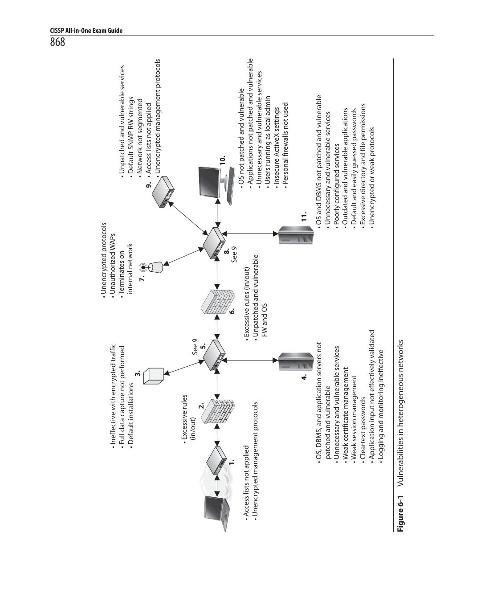
Diagram (p. 902)
depend on the specific hardware, software, and configurations in use. Even if you were able to find an individual or tool who had expert knowledge on the myriad of devices and device-specific security issues, that person or tool would come with its own inherent biases. It is best to leverage team/tool heterogeneity in order to improve the odds of covering blind spots.
Vulnerability and Penetration Testing: What Color Is Your Box?
Vulnerability testing and penetration testing come in boxes of at least three colors: black, white, and gray. The color, of course, is metaphorical, but security professionals need to be aware of the three types. None is clearly superior to the others in all situations, so it is up to us to choose the right approach for our purposes.
Black box testingtreats the system being tested as completely opaque. This
- means that the tester has noa prioriknowledge of the internal design or features of the system. All knowledge will come to the tester only through the assessment itself. This approach simulates an external attacker best and may yield insights into information leaks that can give an adversary better information on attack vectors. The disadvantage of black box testing is that it will probably not cover all of the internal controls since some of them are unlikely to be discovered in the course of the audit. Another issue is that, with no knowledge of the innards of the system, the test team may inadvertently target a subsystem that is critical to daily operations.
White box testingaffords the auditor complete knowledge of the inner
- workings of the system even before the first scan is performed. This approach allows the test team to target specific internal controls and features and should yield a more complete assessment of the system. The downside is that white box testing may not be representative of the behaviors of an external attacker, though it may be a more accurate depiction of an insider threat.
Gray box testingmeets somewhere between the other two approaches.
- Some, but not all, information on the internal workings is provided to the test team. This helps guide their tactics toward areas we want to have thoroughly tested, while also allowing for a degree of realism in terms of discovering other features of the system. This approach mitigates the issues with both white and black box testing.
Penetration Testing
Penetration testingis the process of simulating attacks on a network and its systems at the request of the owner, senior management. Penetration testing uses a set of procedures and tools designed to test and possibly bypass the security controls of a system. Its goal is to measure an organization’s level of resistance to an attack and to uncover any weaknesses within the environment. Organizations need to determine the effectiveness of their
security measures and not just trust the promises of the security vendors. Good computer security is based on reality, not on some lofty goals of how things are supposed to work. A penetration test emulates the same methods attackers would use. Attackers can be clever, creative, and resourceful in their techniques, so penetration attacks should align with the newest hacking techniques along with strong foundational testing methods. The test should look at each and every computer in the environment, as shown in Figure 6-2, because an attacker will not necessarily scan one or two computers only and call it a day.
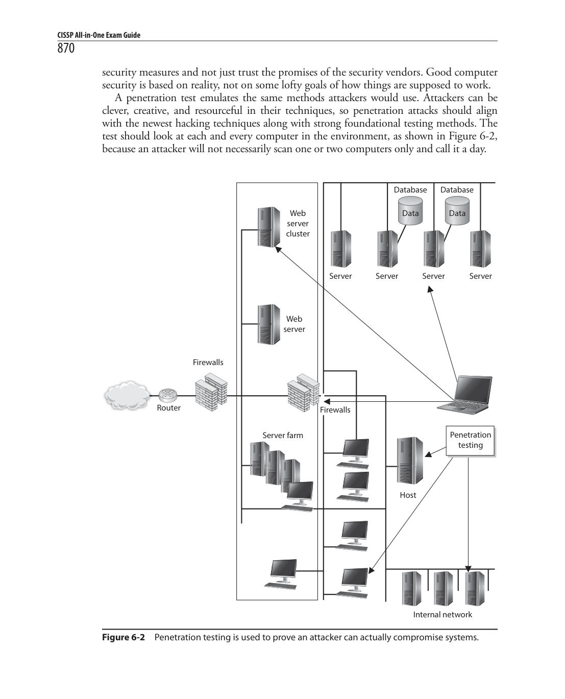
Figure 6-2Penetration testing is used to prove an attacker can actually compromise systems.
The type of penetration test that should be used depends on the organization, its security objectives, and the management’s goals. Some corporations perform periodic penetration tests on themselves using different types of tools, or they use scanning devices that continually examine the environment for new vulnerabilities in an automated fashion. Other corporations ask a third party to perform the vulnerability and penetration tests to provide a more objective view. Penetration tests can evaluate web servers, Domain Name System (DNS) servers, router configurations, workstation vulnerabilities, access to sensitive information, remote dial-in access, open ports, and available services’ properties that a real attacker might use to compromise the company’s overall security. Some tests can be quite intrusive and disruptive. The timeframe for the tests should be agreed upon so productivity is not affected and personnel can bring systems back online if necessary.
Penetration tests are not necessarily restricted to information technology, but may include physical security as well as personnel security. Ultimately, the purpose is to compromise one or more controls, which could be technical, physical, or administrative.
Vulnerability Scanning Recap
Vulnerability scanners provide the following capabilities:
The identification of active hosts on the network
- The identification of active and vulnerable services (ports) on hosts
- The identification of applications and banner grabbing
- The identification of operating systems
- The identification of vulnerabilities associated with discovered operating
- systems and applications
The identification of misconfigured settings
- Test for compliance with host applications’ usage/security policies
- The establishment of a foundation for penetration testing
- The result of a penetration test is a report given to management that describes the vulnerabilities identified and the severity of those vulnerabilities, along with suggestions on how to deal with them properly. From there, it is up to management to determine how the vulnerabilities are actually dealt with and what countermeasures are implemented. It is critical that senior management be aware of any risks involved in performing a penetration test before it gives the authorization for one. In rare instances, a system or application may be taken down inadvertently using the tools and techniques employed during the test. As expected, the goal of penetration testing is to identify vulnerabilities, estimate the true protection the security mechanisms within the environment are providing, and see how suspicious activity is reported—but accidents can and do happen.
Security professionals should obtain an authorization letter that includes the extent of the testing authorized, and this letter or memo should be available to members of the team during the testing activity. This type of letter is commonly referred to as a “Get Out of Jail Free Card.” Contact information for key personnel should also be available, along with a call tree in the event something does not go as planned and a system must be recovered.
NOTEA “Get Out of Jail Free Card” is a document you can present to someone who thinks you are up to something malicious, when in fact you are carrying out an approved test. There have been many situations in which an individual (or a team) was carrying out a penetration test and was approached by a security guard or someone who thought this person was in the wrong place at the wrong time.
When performing a penetration test, the team goes through a five-step process:
1.DiscoveryFootprinting and gathering information about the target 2.EnumerationPerforming port scans and resource identification methods 3.Vulnerability mappingIdentifying vulnerabilities in identified systems and resources 4.ExploitationAttempting to gain unauthorized access by exploiting vulnerabilities 5.Report to managementDelivering to management documentation of test findings along with suggested countermeasures
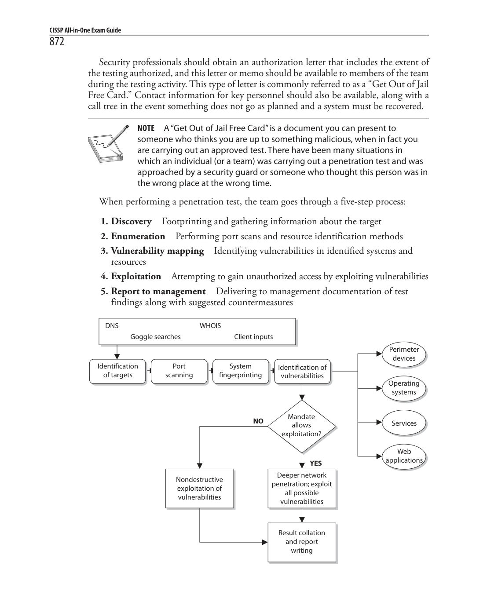
Diagram (p. 906)
The penetration testing team can have varying degrees of knowledge about the penetration target before the tests are actually carried out:
Zero knowledgeThe team does not have any knowledge of the target and
- must start from ground zero.
Partial knowledgeThe team has some information about the target.
- Full knowledgeThe team has intimate knowledge of the target.
- Security testing of an environment may take several forms, in the sense of the degree of knowledge the tester is permitted to have up front about the environment, and also the degree of knowledge the environment is permitted to have up front about the tester. Tests should be conducted externally (from a remote location) or internally (meaning the tester is within the network). Both should be carried out to understand threats from either domain (internal and external). Tests may be blind, double-blind, or targeted. Ablind testis one in which the assessors only have publicly available data to work with. The network security staff is aware that this type of test will take place. Adouble-blind test(stealth assessment) is also a blind test to the assessors, as mentioned previously, but in this case the network security staff is not notified. This enables the test to evaluate the network’s security level and the staff ’s responses, log monitoring, and escalation processes, and is a more realistic demonstration of the likely success or failure of an attack.
Vulnerability Test vs. Penetration Test
A vulnerability assessment identifies a wide range of vulnerabilities in the environment. This is commonly carried out through a scanning tool. The idea is to identify any vulnerabilities thatpotentiallycould be used to compromise the security of our systems. By contrast, in a penetration test, the security professional exploits one or more vulnerabilities to prove to the customer (or your boss) that a hacker can actuallygain access to company resources.
Targeted testscan involve external consultants and internal staff carrying out focused tests on specific areas of interest. For example, before a new application is rolled out, the team might test it for vulnerabilities before installing it into production. Another example is to focus specifically on systems that carry out e-commerce transactions and not the other daily activities of the company. It is important that the team start off with only basic user-level access to properly simulate different attacks. The team needs to utilize a variety of different tools and attack methods and look at all possible vulnerabilities because this is how actual attackers will function. The following sections cover common activities carried out in a penetration test.
War Dialing
War dialingallows attackers and administrators to dial large blocks of phone numbers in search of available modems. In today’s era of almost ubiquitous broadband connectivity, it may seem a little antiquated to worry about dial-up modem connections. The reality of it is that many organizations still employ small numbers of modems, primarily for certain control systems and for backup communications. The fact that they are fairly obscure and not well known may mean that their security controls are not as carefully planned and managed as others. This could present a wonderful opportunity for an adversary.
Many facsimile (FAX) machines are remotely exploitable and could allow attackers to get copies of faxes transmitted or received by that device. Many financial institutions still do a fair amount of business over FAX.
Several free and commercial tools are available to dial all of the telephone numbers in a phone exchange (for example, all numbers from 212-555-0000 through 212-555- 9999) and make note of those numbers answered by a modem. War dialers can be configured to call only those specific exchanges and their subsets that are known to belong to a company. They can be smart, calling only at night when most telephones are not monitored, to reduce the likelihood of several people noticing the odd hang-up phone calls and thus raising the alarm. War dialers can call in random order so nobody notices the phones are ringing at one desk after another after another, and thus raise an alarm. War dialing is a mature science, and can be accomplished quickly with low-cost equipment. War dialers can go so far as to fingerprint the hosts that answer, similar to a network vulnerability scanner, and attempt a limited amount of automated penetration testing, returning a ready-made compromise of the environment to the attacker. Finally, some private branch exchanges (PBXs) (phone systems) or telephony diagnostic tools may be able to identify modem lines and report on them.
Testing Oneself
Some of the same tactics an attacker may use when war dialing may be useful to the system administrator, such as war dialing at night to reduce disruption to the business. Be aware when performing war dialing proactively that dialing at night may also miss some unauthorized modems that are attached to systems that are turned off by their users at the end of the day. War dialers can be configured to avoid certain numbers or blocks of numbers, so the system administrator can avoid dialing numbers known to be voice-only, such as help desks. This can also be done on more advanced PBXs, with any number assigned to a digital voice device that is configured to not support a modem. Any unauthorized modems identified by war dialing should be investigated and either brought into compliance or removed, and staff who installed the unauthorized modems should be retrained or disciplined.
Other Vulnerability Types
As noted earlier, vulnerability scans find the potential vulnerabilities. Penetration testing is required to identify those vulnerabilities that can actually be exploited in the environment and cause damage. Commonly exploited vulnerabilities include the following:
Kernel flawsThese are problems that occur below the level of the user
- interface, deep inside the operating system. Any flaw in the kernel that can be reached by an attacker, if exploitable, gives the attacker the most powerful level ofcontrol over the system.
Countermeasure:Ensure that security patches to operating systems—after sufficient testing—are promptly deployed in the environment to keep the window of vulnerability as small as possible. Buffer overflowsPoor programming practices, or sometimes bugs in libraries,
- allow more input than the program has allocated space to store it. This overwrites data or program memory after the end of the allocated buffer, and sometimes allows the attacker to inject program code and then cause the processor to execute it. This gives the attacker the same level of access as that held by the program that was attacked. If the program was run as an administrative user or by the system itself, this can mean complete access to the system.
Countermeasure:Good programming practices and developer education, automated source code scanners, enhanced programming libraries, and strongly typed languages that disallow buffer overflows are all ways of reducing this extremely common vulnerability. Symbolic linksThough the attacker may be properly blocked from seeing
- or changing the content of sensitive system files and data, if a program follows a symbolic link (a stub file that redirects the access to another place) and the attacker can compromise the symbolic link, then the attacker may be able to gain unauthorized access. (Symbolic links are used in Unix and Linux type systems.) This may allow the attacker to damage important data and/or gain privileged access to the system. A historical example of this was to use a symbolic link to cause a program to delete a password database, or replace a line in the password database with characters that, in essence, created a password less root-equivalent account.
Countermeasure:Programs, and especially scripts, must be written to ensure that the full path to the file cannot be circumvented. File descriptor attacksFile descriptors are numbers many operating systems
- use to represent open files in a process. Certain file descriptor numbers areuniversal, meaning the same thing to all programs. If a program makes unsafe use of a file descriptor, an attacker may be able to cause unexpected input to be provided to the program, or cause output to go to an unexpected place with theprivileges of the executing program.
Countermeasure:Good programming practices and developer education, automated source code scanners, and application security testing are all ways of reducing this type of vulnerability.
Race conditionsRace conditions exist when the design of a program puts
- itin a vulnerable condition before ensuring that those vulnerable conditions aremitigated. Examples include opening temporary files without first ensuring the files cannot be read or written to by unauthorized users or processes, and running in privileged mode or instantiating dynamic load library functions without first verifying that the dynamic load library path is secure. Either of these may allow an attacker to cause the program (with its elevated privileges) to read or write unexpected data or to perform unauthorized commands. An example of a race condition is a time-of-check/time-of-use attack, discussed in Chapter 3.
Countermeasure:Good programming practices and developer education, automated source code scanners, and application security testing are all ways of reducing this type of vulnerability. File and directory permissionsMany of the previously described attacks
- rely on inappropriate file or directory permissions—that is, an error in the access control of some part of the system, on which a more secure part of the system depends. Also, if a system administrator makes a mistake that results in decreasing the security of the permissions on a critical file, such as making a password database accessible to regular users, an attacker can take advantage of this to add an unauthorized user to the password database or an untrusted directory to the dynamic load library search path.
Countermeasure:File integrity checkers, which should also check expected file and directory permissions, can detect such problems in a timely fashion, hopefully before an attacker notices and exploits them.
Many, many types of vulnerabilities exist, and we have covered some, but certainly not all, here in this book. The previous list includes only a few specific vulnerabilities you should be aware of for exam purposes.
Postmortem
Once the tests are over and the interpretation and prioritization are done, management will have in its hands a compilation of many of the ways the company could be successfully attacked. This is the input to the next cycle in the remediation strategy. Every company has only so much money, time, and personnel to commit to defending its network, and thus can mitigate only so much of the total risk. After balancing the risks and risk appetite of the company and the costs of possible mitigations and the value gained from each, management must direct the system and security administrators as to where to spend those limited resources. An oversight program is required to ensure that the mitigations work as expected and that the estimated cost of each mitigation action is closely tracked by the actual cost of implementation. Any time the cost rises significantly or the value is found to be far below what was expected, the process should be briefly paused and reevaluated. It may be that a risk-versus-cost option initially considered less desirable will now make more sense than continuing with the chosen path.
Finally, when all is well and the mitigations are underway, everyone can breathe easier…except the security engineer who has the task of monitoring vulnerability announcements and discussion mailing lists, as well as the early warning services offered by some vendors. To put it another way, the risk environment keeps changing. Between tests, monitoring may make the company aware of newly discovered vulnerabilities that would be found the next time the test is run but that are too high risk to allow to wait that long. And so another, smaller cycle of mitigation decisions and actions must be taken, and then it is time to run the tests again. Table 6-1 provides an example of a testing schedule that each operations and security department should develop and carry out.
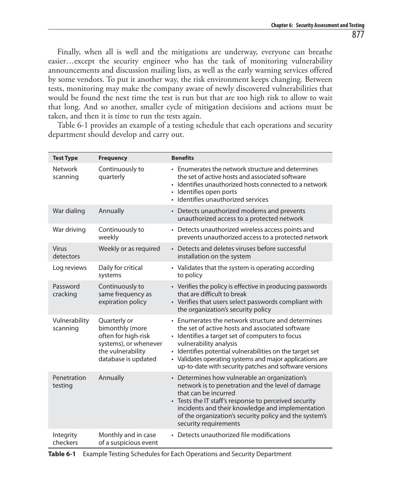
NetworkContinuously to•Enumerates the network structure and determines
Log Reviews
Alog reviewis the examination of system log files to detect security events or to verify the effectiveness of security controls. Log reviews actually start way before the first event is examined by a security specialist. In order for event logs to provide meaningful information, they must capture a very specific but potentially large amount of information that is grounded on both industry best practices and the organization’s risk management process. There is no one-size-fits-all set of event types that will help you assess your security posture. Instead, you need to constantly tune your systems in response to the ever-changing threat landscape. Another critical element when setting up effective log reviews for an organization is to ensure that time is standardized across all networked devices. If an incident affects three devices and their internal clocks are off by even a few seconds, then it will be significantly more difficult to determine the sequence of events and understand the overall flow of the attack. Although it is possible to normalize differing timestamps, it is an extra step that adds complexity to an already challenging process of understanding an adversary’s behavior on our networks. Standardizing and synchronizing time is not a difficult thing to do. The Network Time Protocol (NTP) version 4, described in RFC 5905, is the industry standard for synchronizing computer clocks between networked devices.
Network Time Protocol
The Network Time Protocol (NTP) is one of the oldest protocols used on the Internet and is still in widespread use today. It was originally developed in the 1980s in part to solve the problem of synchronizing trans-Atlantic network communications. Its current version, 4, still leverages statistical analysis of round-trip delays between a client and one or more time servers. The time itself is sent in a UDP datagram that carries a 64-bit timestamp on port 123. Despite its client/server architecture, NTP employs a hierarchy of time sources organized into strata, with stratum 0 being the most authoritative. A network device on a lower stratum acts as a client to a server on a higher stratum, but could itself be a server to a node further downstream from it. Furthermore, nodes on the same stratum can and often do communicate with each other to improve the accuracy of their times. Stratum 0 consists of highly accurate time sources such as atomic clocks, global positioning system (GPS) clocks, or radio clocks. Stratum 1 consists of primary timesources, typically network appliances with highly accurate internal clocks that are connected directly to a stratum 0 source. Stratum 2 is where you would normally see your network servers, such as your local NTP servers and your domain controllers. Stratum 3 can be thought of as other servers and the client computers on your network, although the NTP standard does not define this stratum as such.
Instead, the standard allows for a hierarchy of up to 16 strata wherein the only requirement is that each strata gets its time from the higher one and serves time to the lower strata if it has any.
Now that you have carefully defined the events you want to track and ensured all timestamps are synchronized across your network, you still need to determine where the events will be stored. By default, most log files are stored locally on the corresponding device. The challenge with this approach is that it makes it more difficult to correlate events across devices to a given incident. Additionally, it makes it easier for attackers to alter the log files of whatever devices they compromise. By centralizing the location of all log files across the organization, we address both issues and also make it easier to archive the logs for long-term retention. Efficient archiving is important because the size of these logs will likely be significant. In fact, unless your organization is extremely small, you will likely have to deal with
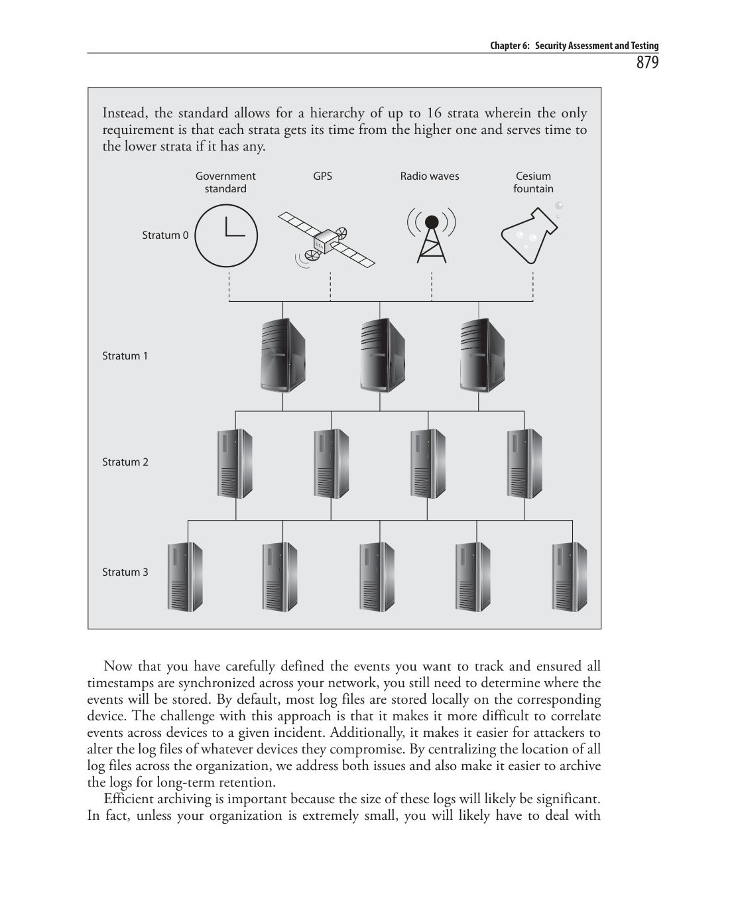
Diagram (p. 913)
thousands (or perhaps even millions) of events each day. Most of these are mundane and probably irrelevant, but we usually don’t know which events are important and which aren’t until we’ve done some analysis. In many investigations, the seemingly unimportant events of days, weeks, or even months ago turn out to be the keys to understanding a security incident. So while retaining as much as possible is necessary, we need a way to quickly separate the wheat from the chaff.
Preventing Log Tampering
Log files are often among the first artifacts that attackers will use to attempt to hide their actions. Knowing this, it is up to us as security professionals to do what we can to make it infeasible, or at least very difficult, for attackers to successfully tamper with our log files. The following are the top five steps we can take to raise the bar for the bad folks:
Remote loggingWhen attackers compromise a device, they often gain
- sufficient privileges to modify or erase the log files on that device. Putting the log files on a separate box will require the attackers to target that box too, which at the very least buys you some time to notice the intrusion.
Simplex communicationSome high-security environments use one-way
- (or simplex) communications between the reporting devices and the central log repository. This is easily accomplished by severing the “receive” pairs on an Ethernet cable. The termdata diodeis sometimes used to refer to this approach to physically ensuring a one-way path.
ReplicationIt is never a good idea to keep a single copy of such an
- important resource as the consolidated log entries. By making multiple copies and keeping them in different locations, you make it harder for attackers to alter the log files, particularly if at least one of the locations is not accessible from the network (e.g., a removable device).
Write-once mediaIf one of the locations to which you back up your log
- files can be written to only once, you make it impossible for attackers to tamper with that copy of the data. Of course, they can still try to physically steal the media, but now you force them to move into the physical domain, which many attackers (particularly ones overseas) will not do.
Cryptographic hash chainingA powerful technique for ensuring events
- that are modified or deleted are easily noticed is to use cryptographic hash chaining. In this technique, each event is appended the cryptographic hash (e.g., SHA-256) of the preceding event. This creates a chain that can attest to the completeness and the integrity of every event in it.
Fortunately, many solutions, both commercial and free, now exist for analyzing and managing log files and other important event artifacts.Security information and event
managers(SIEMs)are systems that enable the centralization, correlation, analysis, and retention of event data in order to generate automated alerts. Typically, an SIEM provides a dashboard interface that highlights possible security incidents. It is then up to the security specialists to investigate each alert and determine if further action is required. The challenge, of course, is ensuring that the number of false positives is kept fairly low and that the number of false negatives is kept even lower.
Synthetic Transactions
Many of our information systems operate on the basis of transactions. A user (typically a person) initiates a transaction that could be anything from a request for a given web page to a wire transfer of half a million dollars to an account in Switzerland. This transaction is processed by any number of other servers and results in whatever action the requestor wanted. This is considered a real transaction. Now suppose that a transaction is not generated by a person but by a script. This is considered asynthetic transaction. The usefulness of synthetic transactions is that they allow us to systematically test the behavior and performance of critical services. Perhaps the simplest example is a scenario in which you want to ensure that your home page is up and running. Rather than waiting for an angry customer to send you an e-mail saying that your home page is unreachable, or spending a good chunk of your day visiting the page on your browser, you could write a script that periodically visits your home page and ensures that a certain string is returned. This script could then alert you as soon as the page is down or unreachable, allowing you to investigate before you would’ve otherwise noticed it. This could be an early indicator that your web server was hacked or that you are under a distributed denial of service (DDoS) attack. Synthetic transactions can do more than simply tell you whether a service is up or down. They can measure performance parameters such as response time, which could alert you to network congestion or server overutilization. They can also help you test new services by mimicking typical end-user behaviors to ensure the system works as it ought to. Finally, these transactions can be written to behave as malicious users by, for example, attempting a cross-site scripting (XSS) attack and ensuring your controls are effective. This is an effective way of testing software from the outside.
Real User Monitoring vs. Synthetic Transactions
Real user monitoring (RUM) is a passive way to monitor the interactions of real userswith a web application or system. It uses agents to capture metrics such as delay,jitter, and errors from the user’s perspective. RUM differs from synthetic transactions in that it uses real people instead of scripted commands. While RUM more accurately captures the actual user experience, it tends to produce noisy data (e.g., incomplete transactions due to users changing their minds or losing mobile connectivity) and thus may require more back-end analysis. It also lacks the
(Continued)
elements of predictability and regularity, which could mean that a problem won’t be detected during low utilization periods. Synthetic transactions, on the other hand, are very predictable and can be very regular, because their behaviors are scripted. They can also detect rare occurrences more reliably than waiting for a user to actually trigger that behavior. Synthetic transactions also have the advantage of not having to wait for a user to become dissatisfied or encounter a problem, which makes them a more proactive approach. It is important to note that RUM and synthetic transactions are different ways of achieving the same goal. Neither approach is the better one in all cases, so it is common to see both employed contemporaneously.
Misuse Case Testing
Use cases are structured scenarios that are commonly used to describe required functionality in an information system. Think of them as stories in which an external actor (e.g., a user) wants to accomplish a given goal on the system. The use case describes the sequence of interactions between the actor and the system that result in the desired outcome. Use cases are textual, but are often summarized and graphically depicted using a Unified Modeling Language (UML) use case diagram such as the one shown in Figure 6-3. This figure illustrates a very simple view of a system in which a customer places online orders. According to the UML, actors such as our user are depicted using stick figures, and the actors’ use cases are depicted as verb phrases inside ovals. Use cases can be related to one another in a variety of ways, which we callassociations. The most common ways in which use cases are associated are by including another use case (that is, the included use case is always executed when the preceding one is) or by extending a use case (meaning that the second use case may or may not be executed depending on a decision point in the main
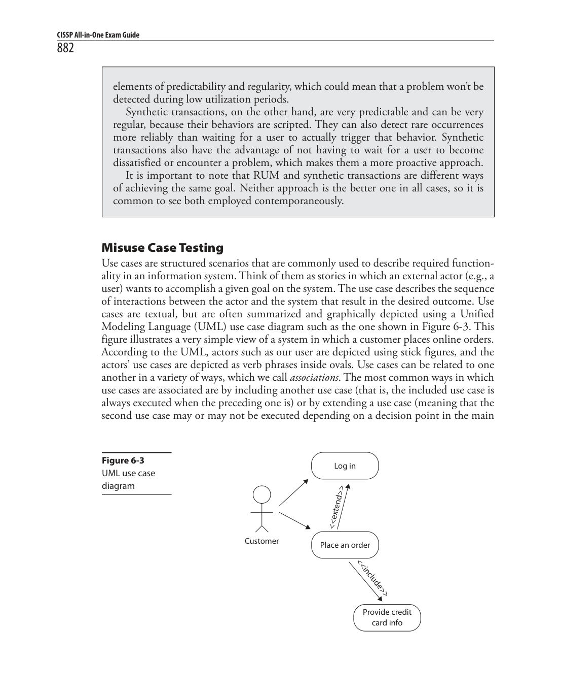
Figure 6-3
use case). In Figure 6-3, our customer attempts to place an order and may be prompted to log in if she hasn’t already done so, but she will always be asked to provide her credit card information. While use cases are very helpful in analyzing requirements for the normal or expected behavior of a system, they are not particularly useful for assessing its security. That is what misuse cases do for us. Amisuse caseis a use case that includes threat actors and the tasks they want to perform on the system. Threat actors are normally depicted as stick figures with shaded heads and their actions (or misuse cases) are depicted as shaded ovals, as shown in Figure 6-4. As you can see, the attacker in this scenario is interested in guessing passwords and stealing credit card information. Misuse cases introduce new associations to our UML diagram. The threat actor’s misuse cases are meant to threaten a specific portion or legitimate use case of our system. You will typically see shaded ovals connected to unshaded ones with an arrow labeled <<threaten>> to denote this relationship. On the other hand, system developers and security personnel can implement controls that mitigate these misuses. These create new unshaded ovals connected to shaded ones with arrows labeled <<mitigate>>. The idea behind misuse case testing is to ensure we have effectively addressed each of the risks we identified and decided to mitigate during our risk management process and that are applicable to the system under consideration. This doesn’t mean that misuse case testing needs to include all the possible threats to our system, but it should include the ones we decided to address. This process forces system developers and integrators to incorporate the products of our risk management process into the early stages of any system development effort. It also makes it easier to quickly step through a complex system and ensure that effective security controls are in the right places without having to get deep into the source code, which is what we describe next.
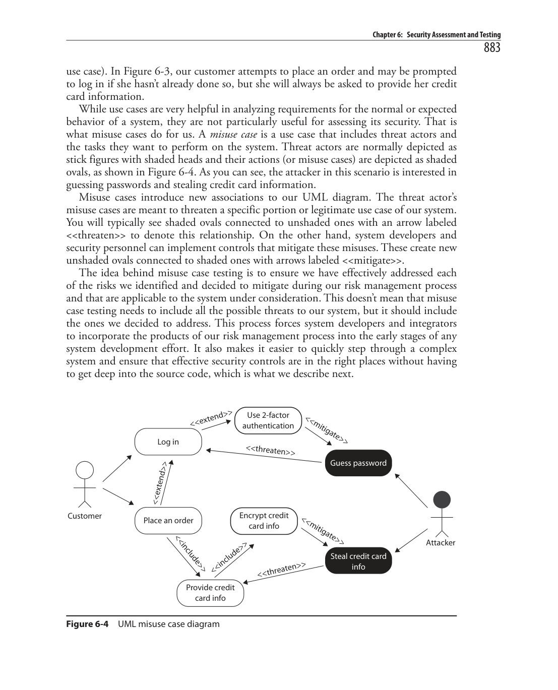
Figure 6-4UML misuse case diagram
Code Reviews
So far, all the security testing we have discussed looks at the system as a black box. This means that we are only assessing the externally visible features without visibility into the inner workings of the system. If you want to test your own software system from the inside, you could use acode review, a systematic examination of the instructions that comprise a piece of software, performed by someone other than the author of that code. This approach is a hallmark of mature software development processes. In fact, in many organizations, developers are not allowed to push out their software modules until someone else has signed off on them after doing a code review. Think of this as proofreading an important document before you send it to an important person. If you try to proofread it yourself, you will probably not catch all those embarrassing typos and grammatical errors as easily as someone else could who is checking it for you. Code reviews go way beyond checking for typos, though that is certainly one element of it. It all starts with a set of coding standards developed by the organization that wrote the software. This could be an internal team, an outsourced developer, or a commercial vendor. Obviously, code reviews of off-the-shelf commercial software are extremely rare unless the software is open source or you happen to be a major government agency. Still, each development shop will have a style guide or a set of documented coding standards that covers everything from how to indent the code to when and how to use existing code libraries. So a preliminary step to the code review is to ensure the author followed the team’s style guide or standards. In addition to helping the maintainability of the software, this step gives the code reviewer a preview of the magnitude of the work ahead; a sloppy coder will probably have a lot of other, harder-to-find defects in his code. After checking the structure and format of the code, the reviewer looks for uncalled or unneeded functions or procedures. These lead to “code bloat,” which makes it harder to maintain and secure the application. For this same reason, the reviewer looks for modules that are excessively complex and should be restructured or split into multiple routines. Finally, in terms of reducing complexity, the reviewer looks for blocks of repeated code that could be refactored. Even better, these could be pulled out and turned into external reusable components such as library functions. An extreme example of unnecessary (and dangerous) procedures are the code stubs and test routines that developers often include in their developmental software. There have been too many cases in which developers left test code (sometimes including hardcoded credentials) in final versions of software. Once adversaries discover this condition, exploiting the software and bypassing security controls is trivial. This problem is insidious, because developers sometimes comment out the code for final testing, just in case the tests fail and they have to come back and rework it. They may make a mental note to revisit the file and delete this dangerous code, but then forget to do so. While commented code is unavailable to an attacker after a program is compiled (unless they have access to the source code), the same is not true of the scripts that are often found in distributed applications. Defensive programming is a best practice that all software development operations should adopt. In a nutshell, it means that as you develop or review the code, you are
A Code Review Process
1.Identify the code to be reviewed (usually a specific function or file). 2.The team leader organizes the inspection and makes sure everyone has access to the correct version of the source code, along with all supporting artifacts. 3.Everyone prepares for inspection by reading through the code and makingnotes. 4.All the obvious errors are collated offline (not in a meeting) so they don’t have to be discussed during the inspection meeting (which would be a wasteof time). 5.If everyone agrees the code is ready for inspection, then the meeting goes ahead. 6.The team leader displays the code (with line numbers) via an overhead projector so everyone can read through it. Everyone discusses bugs, design issues, and anything else that comes up about the code. A scribe (not the author of the code) writes everything down. 7.At the end of the meeting, everyone agrees on a “disposition” for the code: Passed: Code is good to go
- Passed with rework: Code is good so long as small changes are fixed
- Reinspect: Fix problems and have another inspection
- 8.After the meeting, the author fixes any mistakes and checks in the newversion.
9.If the disposition of the code in step 7 was passed with rework, the team leader checks off the bugs that the scribe wrote down and makes sure they’re all fixed. 10.If the disposition of the code in step 7 was reinspect, the team leader goes back to step 2 and starts over again.
constantly looking for opportunities for things to go badly. Perhaps the best example of defensive programming is the practice of treating all inputs, whether they come from a keyboard, a file, or the network, as untrusted until proven otherwise. This user input validation can be a bit trickier than it sounds, because you must understand the context surrounding the input. Are you expecting a numerical value? If so, what is the acceptable range for that value? Can this range change over time? These and many other questions need to be answered before we can decide whether the inputs are valid. Keep in mind that many of the oft-exploited vulnerabilities we see have a lack of input validation as their root cause.
Interface Testing
When we think of interfaces, we usually envision a graphical user interface (GUI) for an application. While GUIs are one kind of interface, there are others that are potentially more important. At its essence, an interface is an exchange point for data between systems and/or users. You can see this in your computer’s network interface card (NIC), which is the exchange point for data between your computer (a system) and the local area network (another system). Another example of an interface is an application programming interface (API), a set of points at which a software system (e.g., the application) exchanges information with another software system (e.g., the libraries). Interface testingis the systematic evaluation of a given set of these exchange points. This assessment should include both known good exchanges and known bad exchanges in order to ensure the system behaves correctly at both ends of the spectrum. The real rub is in finding test cases that are somewhere in between. In software testing, these are called boundary conditionsbecause they lie at the boundary that separates the good from the bad. For example, if a given packet should contain a payload of no more than 1024 bytes, how would the system behave when presented with 1024 bytes plus one bit (or byte) of data? What about exactly 1024 bytes? What about 1024 bytes minus one bit (or byte) of data? As you can see, the idea is to flirt with the line that separates the good from the bad and see what happens when we get really close to it. There are many other test cases we could consider, but the most important lesson here is that the primary task of interface testing is to dream up all the test cases ahead of time, document them, and then insert them into a repeatable and (hopefully) automated test engine. This way you can ensure that as the system evolves, a specific interface is always tested against the right set of test cases. We will talk more about software testing in Chapter 8, but for now you should remember that interface testing is a special case of something calledintegration testing, which is the assessment of how different parts of a system interact with each other.
Auditing Administrative Controls
So far in this chapter, we have only discussed the auditing of technical controls. Just as important, or maybe even more so, is the testing of administrative controls. Recall that an administrative control is typically one that is implemented primarily through policies or procedures. In this section, we discuss some key ways in which to test administrative controls.
Account Management
A preferred technique of attackers is to become “normal” privileged users of the systems they compromise as soon as possible. They can accomplish this in at least three ways: compromise an existing privileged account, create a new privileged account, or elevate the privileges of a regular user account. The first approach can be mitigated through the use of strong authentication (e.g., strong passwords or, better yet, two-factor authentication) and by having administrators use privileged accounts only for specific tasks.
The second and third approaches can be mitigated by paying close attention to the creation, modification, or misuse of user accounts. These controls all fall in the category of account management.
Adding Accounts
When new employees arrive, they should be led through a well-defined process that is aimed at ensuring not only that they understand their duties and responsibilities, but also that they are assigned the required company assets and that these are properly configured, protected, and accounted for. While the specifics of how this is accomplished will vary from organization to organization, there are some specific administrative controls that should be universal. First, all new users should be required to read through and acknowledge they understand (typically by signing) all policies that apply to them. At a minimum, every organization should have (and every user should sign) an acceptable use policy (AUP) that specifies what the organization considers acceptable use of the information systems that are made available to the employee. Using a workplace computer to view pornography, send hate e-mail, or hack other computers is almost always forbidden. On the other hand, many organizations allow their employees limited personal use, such as checking personal e-mail or surfing the Web during breaks. The AUP is a useful first line of defense, because it documents when each user was made aware of what is and is not acceptable use of computers (and other resources) at work. This makes it more difficult for a user to claim ignorance if they subsequently violate the AUP. Testing that all employees are aware of the AUP and other applicable policies can be the first step in auditing user accounts. Since every user should have a signed AUP, for instance, all we need is to get a list of all users in the organization and then compare it to the files containing the signed documents. In many cases, all the documents a new employee signs are maintained by human resources (HR) and the computer accounts are maintained by IT. Cross-checking AUPs and user accounts can also verify that these two departments are communicating effectively. The policies also should dictate the default expiration date of accounts, the password policy, and the information to which a user should have access. This last part becomes difficult because the information needs of individual users typically vary over time.
Modifying Accounts
Suppose a newly hired IT technician is initially assigned the task of managing backups for a set of servers. Over time, you realize this individual is best suited for internal user support, including adding new accounts, resetting passwords, and so forth. The privileges needed in each role are clearly different, so how should you handle this? Many organizations, unfortunately, resort to giving all privileges that a user may need. We have all been in, seen, or heard of organizations where every user is a local admin on his or her computer and every member of the IT department is a domain admin. This is an exceptionally dangerous practice, especially if they all use these elevated credentials by default. This is often referred to asprivilege accumulation.
Adding, removing, or modifying the permissions that a user has should be a carefully controlled and documented process. When are the new permissions effective? Why are they needed? Who authorized the change? Organizations that are mature in their security processes will have a change control process in place to address user privileges. While many auditors will focus on who has administrative privileges in the organization, there are many custom sets of permissions that approach the level of an admin account. It is important, then, to have and test processes by which elevated privileges are issued.
The Problem with Running as Root
It is undoubtedly easier to do all your work from one user account, especially if that account has all the privileges you could ever need. The catch, as you may well know, is that if your account is compromised, the malicious processes will run with whatever privileges the account has. If you run as root (or admin) all the time, you can be certain that if an attacker compromises your box, he will instantly have the privileges to do whatever he needs or wants to do. A better approach is to do as much of your daily work as you can using a restricted account and elevate to a privileged account only when you must. The way in which you do this varies by operating system:
Windows operating systems allow you to right-click any program and select
- Run As to elevate your privileges. From the command prompt, you can use the commandrunas /user:<AccountName>to accomplish the samegoal.
In Linux operating systems, you can simply typesudo<SomeCommand>
- at the command line to run a program as the super (or root) user. If the program is a GUI one, you need to start it from the command line using the commandgksudo(orkdesudofor Kubuntu). Linux has no way to run a program with elevated privileges directly from the GUI; you must start from the command line.
In Mac OS X, you usesudofrom the Terminal app just like you would
- do from a Linux terminal. However, if you want to run a GUI app with elevated privileges, you need to usesudo open –a <AppName>since there is nogksudoorkdesudocommand.
Suspending Accounts
Another important practice in account management is to suspend accounts that are no longer needed. Every large organization eventually stumbles across one or more accounts that belong to users who are no longer part of the organization. In extreme cases, an organization discovers that a user who left several months ago still has privileged accounts. The unfettered presence of these accounts on our networks gives adversaries a powerful means
to become seemingly legitimate users, which makes our job of detecting and repulsing them that much more difficult. Accounts may become unneeded, and thus require suspension, for a variety of reasons, but perhaps the most common one would be that the user of the account was terminated or otherwise left the organization. Other reasons for suspension include reaching the account’s default expiration date, and temporary, but extended, absences of employees (e.g., maternity leave, military deployment). Whatever the reason, we must ensure that the account of someone who is not present to use it is suspended until that person returns or the term of our retention policy is met. Testing the administrative controls on suspended accounts follows the same pattern already laid out in the preceding two sections: look at each account (or take a representative sample of all of them) and compare it with the status of its owner according to our HR records. Alternatively, we can get a list of employees who are temporarily or permanently away from the organization and check the status of those accounts. It is important that accounts are deleted only in strict accordance with the data retention policy. Many investigations into terminated employees have been thwarted because administrators have prematurely deleted user accounts and/or files.
Backup Verification
Modern organizations deal with vast amounts of data, which must be protected for a variety of reasons, including disaster recovery (DR). We have all been in at least one situation in which we have lost data and needed to get it back. Some of us have had a rude awakening upon discovering that the data was lost permanently. The specific nature of the backup media is not as important as the fact that the data must be available when we need it most. Magnetic tapes are now able to hold over 180 terabytes of data, which makes this seemingly antiquated technology the best in terms of total cost of ownership. That being said, many organizations prefer other technologies for daily operations, and relegate tapes to the role of backup to the backup. In other words, it is not uncommon for an organization to back up their user and enterprise data to a storage area network (SAN) on a daily basis, and back up these backups to tape on a weekly basis. Obviously, the frequency of each backup (hourly, daily, weekly) is driven by the risk management process discussed in Chapter 1. Whatever the approach to backing up our organizational data, we need to periodically test it to ensure that the backups will work as promised when we need them. There are some organizations that have faced an event or disaster that required them to restore some or all data from backups, only to discover that the backups were missing, corrupted, or outdated. This section discusses some approaches to assess whether the data will be there when we need it.
Never back up your data to the same device on which the original data exists.
Types of Data
Not all data is created equal, and different types may have unique requirements when it comes to backups. The following sections discuss some of the major categories of data that most of us deal with and some considerations when planning to preserve that data. Keep in mind, however, that there are many other types of data that we will not discuss here for the sake of brevity.
This is the type of data with which most of us are familiar. These User Data Files are the documents, presentations, and spreadsheets that we create or use on a daily basis. Though backing up these files may seem simple, challenges arise when users put “backup” copies in multiple locations for safekeeping. Users, if left to their own devices, may very well end up with inconsistently preserved files and may even violate retention requirements. The challenge with this type of data is ensuring that it is consistently backed up in accordance with all applicable policies, regulations, and laws.
Databases are different from regular files in that they typically store the Databases entire database in a special file that has its own file system within it. In order to make sense of this embedded file system, your database software uses metadata that lives in other files within your system. This architecture can create complex interdependencies among files on the database server. Fortunately, all major database management systems (DBMSs) include one or more means to back up their databases. The challenge is in ensuring that the backup will be sufficient to reconstitute the databases if necessary. To verify the backups, many organizations use a test database server that is periodically used to verify that the databases can be recovered from backup and that the queries will execute properly from the restored data.
By some estimates, as much as 75 percent of an average organization’s Mailbox Data data lives in its mailboxes. Depending on the mail system you are running, the backup process may be very different. Still, some commonalities exist across all platforms, such as the critical need to document in excruciating detail every aspect of the configuration of the mail servers. Most medium-sized to large organizations will have multiple mail servers (perhaps backing each other up), so it is a good idea not to back them up at the same time. Finally, whatever backup mechanism you have in place for your mail servers should facilitate compliance with e-discovery.
Virtualization as a Backup and Security Strategy
Many organizations have virtualized their server infrastructure for performance and maintenance reasons. Some are also virtualizing their client systems and turning their workstations into thin clients to a virtualization infrastructure. The next step inthisevolution is the use of virtual machine (VM) snapshots as a backup strategy. The main advantage to this approach is that restoration is almost instantaneous. Allyou typically have to do is click a button or issue a scripted command and the VM will revert to the designated state. Another key advantage is that this approach
lends itself to automation and integration with other security systems so that if, for example, a workstation is compromised because the user clicked on a link and an intrusion detection system (IDS) detected this incident, then the VM can be instantly quarantined for later analysis while the user is dropped into the most recent snapshot automatically with very little impact to productivity.
Verification
Having data backups is not particularly helpful unless we are able to use them to recover from mistakes, accidents, attacks, or disasters. Central to verifying this capability is understanding the sorts of things that can go wrong and which of them would require backups. Recall from our discussion on threat modeling in Chapter 1 that an important step in understanding risk is to consider what can happen or be done to our systems that would destroy, degrade, or disrupt our ability to operate. It is helpful to capture these possibilities in scenarios that can then inform how we go about ensuring that we are prepared for the likely threats to our information systems. It is also helpful to automate as much of the testing as possible, particularly in large organizations. This will ensure that we cover the likely contingencies in a very methodical and predictable manner. Some tests may cause disruptions to our business processes. It is difficult to imagine how a user’s backups can be fully tested without involving that user in the process to some extent. If, for instance, our users store files locally and we want to test Mary’s workstation backup, an approach could be to restore her backup to a new computer and have Mary log into and use the new computer as if it were the original. She would be in a better position than anyone else to determine whether everything works as expected. This kind of thorough testing is expensive and disruptive, but it ensures that we have in place what we need. Obviously, we have to be very selective about when and how we impact our business processes, so it becomes a trade-off. However you decide to implement your backup verification, you must ensure that you are able to assert that all critical data is backed up and that you will be able to restore it in time of need. This means that you will probably have to develop an inventory of data and a schedule for testing it as part of your plan. This inventory will be a living document, so you must have a means to track and document changes to it. Fortunately, major items such as mail and database servers don’t change very frequently. The challenge will be in verifying the backups of user data. This brings us back to our policies. We already discussed the importance of the organization’s data retention policy, but an equally important one is the policy that dictates how user data is backed up. Many organizations require their staff to maintain their files on file shares on network servers, but we all know that users don’t necessarily always do this. It is not uncommon for users to keep a local folder with the data that is most important to them. If the local files are not being backed up, then we risk losing the most critical files, particularly if backups can be disabled by the user. The point of this is that policies need to be carefully thought out and aggressively enforced if we are to be ready for the day when things go badly for us.
Testing Data Backups
Develop scenariosthat capture specific sets of events that are representative
- of the threats facing the organization. Develop a planthat tests all the mission-critical data backups in each of the
- scenarios. Leverage automationto minimize the effort required by the auditors and
- ensure tests happen periodically. Minimize impact on businessprocesses of the data backup test plan so that
- it can be executed regularly. Ensure coverageso that every system is tested, though not necessarily in the
- same test. Document the resultsso you know what is working and what needs to be
- worked on. Fix or improveany issues you documented.
Disaster Recovery and Business Continuity
Most organizations cannot afford to be incapable of performing their business processes for very long. Depending on the specific organization, the acceptable downtime can be measured in minutes, hours, or, in some noncritical sectors, maybe days. Consequently, we all need to have a plan for ensuring we can go on working regardless of what happens around or to us. As introduced in Chapter 1,business continuityis the term used to describe the processes enacted by an organization to ensure that its vital business processes remain unaffected or can be quickly restored following a serious incident. Business continuity looks holistically at the entire organization. A subset of this effort, called disaster recovery, focuses on restoring the information systems after a disastrous event. Like any other business process, these processes must be periodically assessed to ensure they are still effective.
Testing and Revising the Business Continuity Plan
The business continuity plan (BCP), which should incorporate a disaster recovery plan (DRP), should be tested regularly because environments continually change. Interestingly, many organizations are moving away from the concept of “testing,” because a test naturally leads to a pass or fail score, and in the end, that type of score is not very productive. Instead, many organizations are adopting the concept of exercises, which appear to be less stressful, better focused, and ultimately more productive. Each time the BCP is exercised or tested, improvements and efficiencies are generally uncovered, yielding better and better results over time. The responsibility of establishing periodic exercises and the maintenance of the plan should be assigned to a specific person or persons who will
have overall ownership responsibilities for the business continuity initiatives within the organization. The maintenance of the BCP should be incorporated into change management procedures. That way, any changes in the environment are reflected in the plan itself. Plan maintenance is discussed in the next section, “Maintaining the Plan.” Tests and disaster recovery drills and exercises should be performed at least once a year. A company should have no real confidence in a developed plan until it has actually been tested. The tests and drills prepare personnel for what they may face and provide a controlled environment to learn the tasks expected of them. These tests and drills also point out issues to the planning team and management that may not have been previously thought about and addressed as part of the planning process. The exercises, in the end, demonstrate whether a company can actually recover after a disaster. The exercise should have a predetermined scenario that the company may indeed be faced with one day. Specific parameters and a scope of the exercise must be worked out before sounding the alarms. The team of testers must agree upon what exactly is getting tested and how to properly determine success or failure. The team must agree upon the timing and duration of the exercise, who will participate in the exercise, who will receive which assignments, and what steps should be taken. Also, the team needs to determine whether hardware, software, personnel, procedures, and communications lines are going to be tested and whether it is all or a subset of these resources that will be included in the event. If the test will include moving some equipment to an alternate site, then transportation, extra equipment, and alternate site readiness must be addressed and assessed. Most companies cannot afford to have these exercises interrupt production or productivity, so the exercises may need to take place in sections or at specific times, which will require logistical planning. Written exercise plans should be developed that will test for specific weaknesses in the overall BCP. The first exercises should not include all employees, but rather a small representative sample of the organization. This allows both the planners and the participants to refine the plan. It also allows each part of the organization to learn its roles and responsibilities. Then, larger drills can take place so overall operations will not be negatively affected. The people conducting these drills should expect to encounter problems and mistakes. After all, identifying potential problems and mistakes is why they are conducting the drills in the first place. A company would rather have employees make mistakes during a drill so they can learn from them and perform their tasks more effectively during a real disaster.
After a disaster, telephone service may not be available. For communications purposes, alternatives should be in place, such as mobile phones or walkie-talkies.
A few different types of drills and tests can be used, each with its own pros and cons. The following sections explain the different types of drills.
Checklist TestIn this type of test, copies of the DRP or BCP are distributed to the different departments and functional areas for review. This enables each functional manager to review the plan and indicate if anything has been left out or if some approaches should be modified or deleted. This method ensures that nothing is taken for granted or omitted, as might be the case in a single-department review. Once the departments have reviewed their copies and made suggestions, the planning team then integrates those changes into the master plan.
The checklist test is also called the desk check test.
Structured Walk-Through TestIn this test, representatives from each department or functional area come together and go over the plan to ensure its accuracy. The group reviews the objectives of the plan; discusses the scope and assumptions of the plan; reviews the organization and reporting structure; and evaluates the testing, maintenance, and training requirements described. This gives the people responsible for making sure a disaster recovery happens effectively and efficiently a chance to review what has been decided upon and what is expected of them. The group walks through different scenarios of the plan from beginning to end to make sure nothing was left out. This also raises the awareness of team members about the recovery procedures.
This type of test takes a lot more planning and people. In this Simulation Test situation, all employees who participate in operational and support functions, or their representatives, come together to practice executing the disaster recovery plan based on a specific scenario. The scenario is used to test the reaction of each operational and support representative. Again, this is done to ensure specific steps were not left out and that certain threats were not overlooked. It raises the awareness of the people involved. The drill includes only those materials that will be available in an actual disaster to portray a more realistic environment. The simulation test continues up to the point of actual relocation to an offsite facility and actual shipment of replacement equipment.
In a parallel test, some systems are moved to the alternate site and Parallel Test processing takes place. The results are compared with the regular processing that is done at the original site. This ensures that the specific systems can actually perform adequately at the alternate offsite facility, and points out any tweaking or reconfiguring that is necessary.
Full-Interruption TestThis type of test is the most intrusive to regular operations and business productivity. The original site is actually shut down, and processing takes place at the alternate site. The recovery team fulfills its obligations in preparing the systems and environment for the alternate site. All processing is done only on devices at the alternate offsite facility.
This is a full-blown drill that takes a lot of planning and coordination, but it can reveal many holes in the plan that need to be fixed before an actual disaster hits. Fullinterruption tests should be performed only after all other types of tests have been successful. They are the most risky and can impact the business in very serious and devastating ways if not managed properly; therefore, senior management approval needs to be obtained prior to performing full-interruption tests. The type of organization and its goals will dictate what approach to the training exercise is most effective. Each organization may have a different approach and unique aspects. If detailed planning methods and processes are going to be taught, then specific training may be required rather than general training that provides an overview. Higher-quality training will result in an increase in employee interest and commitment. During and after each type of test, a record of the significant events should be documented and reported to management so it is aware of all outcomes of the test.
Other Types of TrainingOther types of training employees need in addition to disaster recovery training include first aid and cardiac pulmonary resuscitation (CPR), how to properly use a fire extinguisher, evacuation routes and crowd control methods, emergency communications procedures, and how to properly shut down equipment in different types of disasters. The more technical employees may need training on how to redistribute network resources and how to use different telecommunications lines if the main one goes down. They may need to know about redundant power supplies and be trained and tested on the procedures for moving critical systems from one power supply to the next.
Emergency ResponseOften, the initial response to an emergency affects the ultimate outcome. Emergency response procedures are the prepared actions that are developed to help people in a crisis situation better cope with the disruption. These procedures are the first line of defense when dealing with a crisis situation. People who are up-to-date on their knowledge of disaster recovery will perform the best, which is why training and drills are very important. Emergencies are unpredictable, and no one knows when they will be called upon to perform their disaster recovery duties. Protection of life is of the utmost importance and should be dealt with first before attempting to save material objects. Training and drills should show the people in charge how to evacuate personnel safely (see Table 6-2). All personnel should know their designated emergency exits and destinations. Emergency gathering spots should take into consideration the effects of seasonal weather. One person in each designated group is often responsible for making sure all people are accounted for. One person in particular should be responsible for notifying the appropriate authorities: the police department, security guards, fire department, emergency rescue, and management. With proper training, employees will be better equipped to handle emergencies and avoid the reflex to just run to the exit.
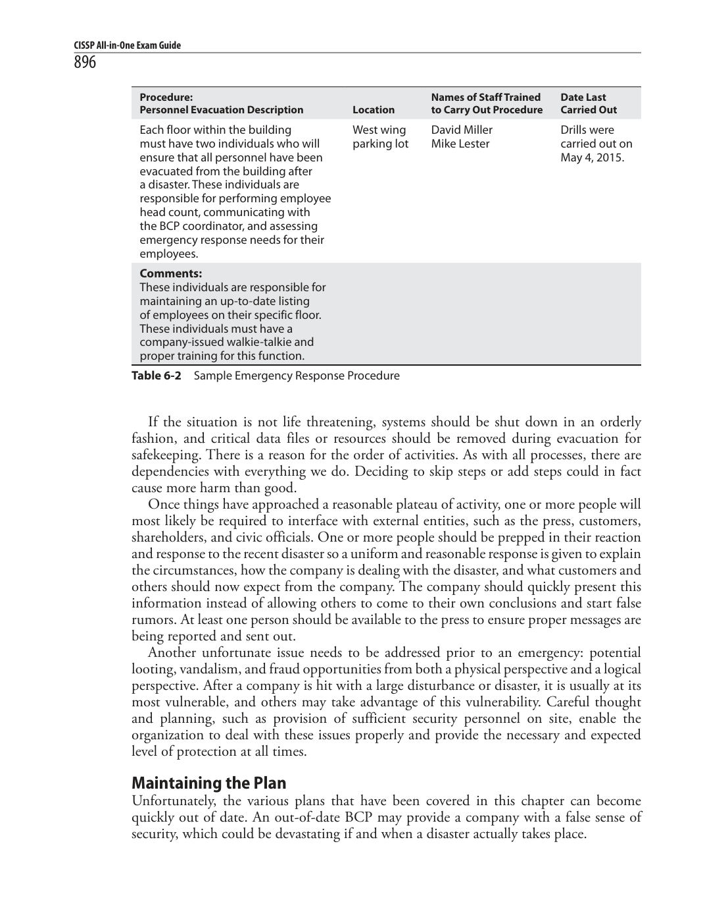
Each floor within the buildingWest wingDavid MillerDrills were
If the situation is not life threatening, systems should be shut down in an orderly fashion, and critical data files or resources should be removed during evacuation for safekeeping. There is a reason for the order of activities. As with all processes, there are dependencies with everything we do. Deciding to skip steps or add steps could in fact cause more harm than good. Once things have approached a reasonable plateau of activity, one or more people will most likely be required to interface with external entities, such as the press, customers, shareholders, and civic officials. One or more people should be prepped in their reaction and response to the recent disaster so a uniform and reasonable response is given to explain the circumstances, how the company is dealing with the disaster, and what customers and others should now expect from the company. The company should quickly present this information instead of allowing others to come to their own conclusions and start false rumors. At least one person should be available to the press to ensure proper messages are being reported and sent out. Another unfortunate issue needs to be addressed prior to an emergency: potential looting, vandalism, and fraud opportunities from both a physical perspective and a logical perspective. After a company is hit with a large disturbance or disaster, it is usually at its most vulnerable, and others may take advantage of this vulnerability. Careful thought and planning, such as provision of sufficient security personnel on site, enable the organization to deal with these issues properly and provide the necessary and expected level of protection at all times.
Maintaining the Plan
Unfortunately, the various plans that have been covered in this chapter can become quickly out of date. An out-of-date BCP may provide a company with a false sense of security, which could be devastating if and when a disaster actually takes place.
The main reasons plans become outdated include the following:
The business continuity process is not integrated into the change
- managementprocess.
Changes occur to the infrastructure and environment.
- Reorganization of the company, layoffs, or mergers occur.
- Changes in hardware, software, and applications occur.
- After the plan is constructed, people feel their job is done.
- Personnel turnover.
- Large plans take a lot of work to maintain.
- Plans do not have a direct line to profitability.
- Organizations can keep the plan updated by taking the following actions:
Make business continuity a part of every business decision.
- Insert the maintenance responsibilities into job descriptions.
- Include maintenance in personnel evaluations.
- Perform internal audits that include disaster recovery and continuity
- documentation and procedures.
Perform regular drills that use the plan.
- Integrate the BCP into the current change management process.
- Incorporate lessons learned from actual incidents into the plan.
- One of the simplest and most cost-effective and process-efficient ways to keep a plan up-to-date is to incorporate it within the change management process of the organization. When you think about it, this approach makes a lot of sense. Where do you document new applications, equipment, or services? Where do you document updates and patches? Your change management process should be updated to incorporate fields and triggers that alert the BCP team when a significant change will occur and should provide a means to update the recovery documentation. What’s the point of removing the dust bunnies off a plan if it has your configurations from three years ago? There is nothing worse than that feeling at the pit of your stomach when you realize the one thing you thought was going to save you will in fact only serve to keep a fire stoked with combustible material. Moreover, you should incorporate lessons learned from any actual incidents and actual responses. The team should perform a “postmortem” on the response and have necessary changes made to plans, contracts, personnel, processes, and procedures.
BCP Life Cycle
Remember that most organizations aren’t static, but change, often rapidly, as do the conditions under which organizations must operate. Thus, the BCP should be considered a life cycle in order to deal with the constant and inevitable change that will affect it. Understanding and maintaining each step of the life cycle is critical if the BCP is to be useful to the organization. The BCP life cycle is outlined in Figure 6-5.
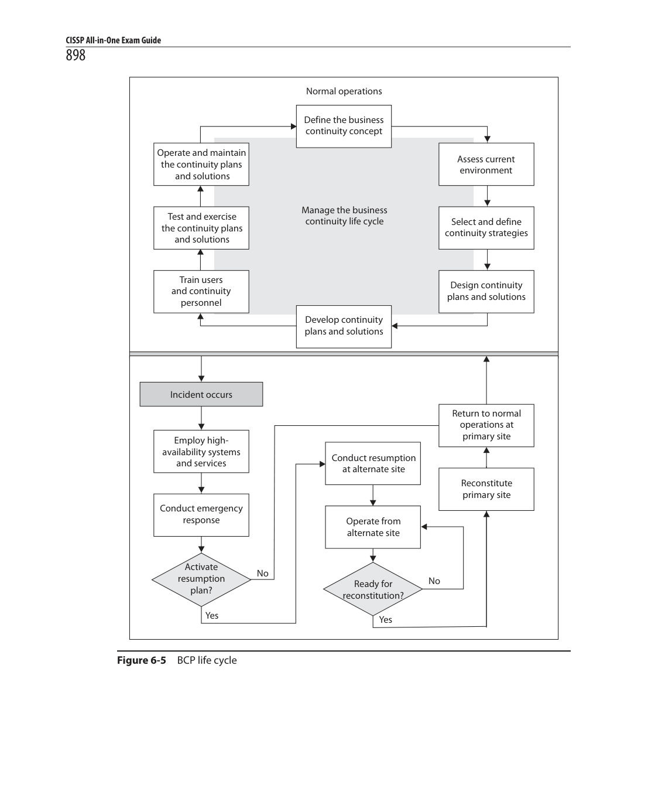
Figure 6-5BCP life cycle
Security Training and Security Awareness Training
As should be clear from the preceding discussions, having a staff that is well trained in security issues is crucial to the security of our organizations. The terms training and awareness are often used interchangeably, but they have subtly different meanings. Security trainingis the process of teaching a skill or set of skills that will allow people to perform specific functions better.Security awareness training, on the other hand, is the process of exposing people to security issues so that they may be able to recognize them and better respond to them. Security training is typically provided to security personnel, while security awareness training should be provided to every member of the organization. Assessing the effectiveness of our security training programs is fairly straightforward because the training is tied to specific security functions. Therefore, in order to test the effectiveness of a training program, all we have to do is test the performance of an individual on those functions before and after the training. If the performance improves, then the training was probably effective. Keep in mind that skills atrophy over time, so the effectiveness of the training should be measured immediately after it concludes. Otherwise, we are assessing the long-term retention of the functional skills. We now turn our attention to the somewhat more difficult issue of assessing the effectiveness of a security awareness training program. As we broach this subject, keep in mind that the end state is to better equip our teammates to recognize and deal with security issues. This implies that a key measure of the effectiveness of the security awareness program is the degree to which people change their behaviors when presented with certain situations. If this change is toward a better security posture, then we can infer that the program was effective. In the following sections, we take a look at specific components of a security awareness training program that are common to many organizations.
Social Engineering
Social engineering, in the context of information security, is the process of manipulating individuals so that they perform actions that violate security protocols. Whether the action is divulging a password, letting someone into the building, or simply clicking a link, it has been carefully designed by the adversaries to help them exploit our information systems. A common misconception is that social engineering is an art of improvisation. While improvising may help the attacker better respond to challenges, the fact of the matter is that most effective social engineering is painstakingly designed against a particular target, usually a specific individual. Perhaps the most popular form of social engineering isphishing, which is social engineering conducted through a digital communication. Figure 6-6 depicts the flow of a typical e-mail phishing attack. (While e-mail phishing receives a lot of attention, text messages can also be used to similar effect.) Like casting a baited fishing line into a pond full of fish, phishing relies on the odds that if enough people receive an enticing or believable message, at least one of them will click an embedded link within it. Some adversaries target specific individuals or groups, which is referred to asspear phishing. In some cases, the targets are senior executives, in which case it is calledwhaling. In whatever variety it comes, the desired result of phishing is almost always to have the
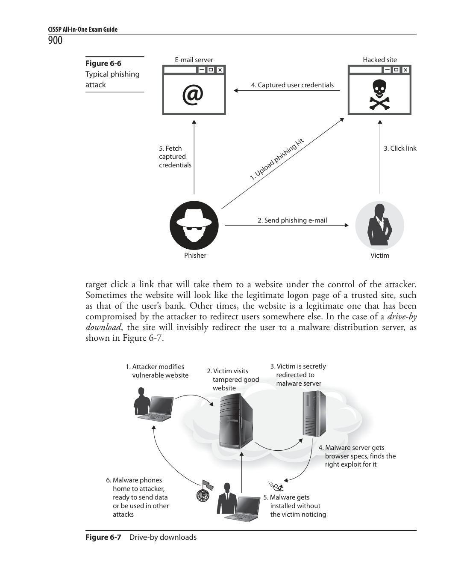
Figure 6-6
@
target click a link that will take them to a website under the control of the attacker. Sometimes the website will look like the legitimate logon page of a trusted site, such as that of the user’s bank. Other times, the website is a legitimate one that has been compromised by the attacker to redirect users somewhere else. In the case of adrive-by download, the site will invisibly redirect the user to a malware distribution server, as shown in Figure 6-7.
Pretextingis a form of social engineering, typically practiced in person or over the phone, in which the attacker invents a believable scenario in an effort to persuade the target to violate a security policy. A common example is a call received from (allegedly) customer service or fraud prevention at a bank in which the attacker tries to get the target to reveal account numbers, personal identification numbers (PINs), passwords, or similarly valuable information. Remarkably, pretexting was legal in the United States until 2007, as long as it was not used to obtain financial records. In 2006, Hewlett- Packard became embroiled in a scandal dealing with its use of pretexting in an effort to identify the sources of leaks on its board of directors. Congress responded by passing the Telephone Records and Privacy Protection Act of 2006, which imposes stiff criminal penalties on anyone who uses pretexting to obtain confidential information. So how does one go about assessing security awareness programs aimed at countering social engineering in all its forms? One way is to keep track of the number of times users fall victim to these attacks before and after the awareness training effort. The challenge with this approach is that victims may not spontaneously confess to falling for these tricks, and our security systems will certainly not detect all instances of successful attacks. Another approach is to have auditors (internal or external) conduct benign social engineering campaigns against our users. When users click a link inserted by the auditors, they are warned that they did something wrong and perhaps are redirected to a web page or short video explaining how to avoid such mistakes in the future. All the while, our automated systems are keeping tabs on which users are most susceptible and how often these attacks are successful. Anecdotal evidence suggests that there is a group of users who will not respond to remedial training, so the leadership should decide what to do with individuals who repeatedly make the wrong choices.
Online Safety
Oftentimes users don’t have to be tricked into doing something wrong, but willingly go down that path. This is often the result of ignorance of the risks, and the remediation of this ignorance is the whole point of the security awareness campaign. An effective security awareness program should include issues associated with unsafe online behavior that could represent risk for the organization. Perhaps one of the most important elements of safe online behavior is the proper use of social media. A good starting point is the proper use of privacy settings, particularly considering that all major social media sites have means to restrict what information is shared with whom. The default settings are not always privacy-focused, so it is important for users to be aware of their options. This becomes particularly important when users post information concerning their workplace. Part of the security awareness program should be to educate users about the risks they can pose to their employers if their posts reveal sensitive information. Once posted, the information cannot be recalled; it is forevermore out there. Sometimes it is not what goes out to the Internet, but what comes in from it that should concern users. Simply surfing to the wrong website, particularly from a workplace computer, may be all it takes to bring down the whole company. Adrive-by downloadis an automatic attack that is triggered simply by visiting a malicious website. While the
mechanisms vary, the effect can be the execution of malware on the client computer, with or without additional user interaction. While web filters can mitigate some of the risk of surfing to inappropriate sites, malicious websites sometimes are legitimate ones that have been compromised, which means that the filters may not be effective. While some downloads happen without user knowledge or interaction, others are intentional. It is not unusual for naïve users to attempt to download and install unauthorized and potentially risky applications on their computers. Unfortunately, many organizations do not use software whitelisting and even allow their users to have administrative privileges on their computers, which allows them to install any application they desire. Even benign applications can be problematic for the security of our systems, but when you consider that the software may come from an untrusted and potentially malicious source, the problem is compounded. Assessing the effectiveness of an awareness campaign that promotes users’ online safety is not easy and typically requires a multipronged approach. Social media posts may be detected using something as simple as Google Alerts, which trigger whenever Google’s robots find a term of interest online. A simple script can then filter out the alerts by source in order to separate, say, a news outlet report on our organization from an illadvised social media post. The software download problem (whether intentional or not) can be assessed by a well-tuned IDS. Over time, with an effective awareness campaign, we should see the number of incidents go down, which will allow us to focus our attention on repeat offenders.
Data Protection
We already covered data protection in Chapter 2, but for the purposes of assessing a security awareness program, it bears repeating that sensitive data must always be encrypted whether at rest or in transit. It is possible for users to circumvent controls and leave this data unprotected, so awareness is a key to preventing this type of behavior. Unencrypted data is vulnerable to leaks if it is stored in unauthorized online resources or intentionally (but perhaps not maliciously) shared with others. Another topic we covered in Chapter 2 is the proper destruction of sensitive data when it is no longer needed and falls out of the mandatory retention period. Testing the degree to which our users are aware of data protection requirements and best practices can best be done by using tags in our files’ metadata. The information classification labels we discussed in Chapter 2 become an effective means of tracking where our data is. Similarly, data loss prevention (DLP) solutions can help stop leaks and identify individuals who are maliciously or inadvertently exposing our sensitive information. This allows us to target those users either with additional awareness training or with disciplinary actions.
Culture
At the end of the day, the best way to test the security awareness of an organization may be by assessing its security culture. Do we have the kind of environment in which users feel safe self-reporting? Are they well incentivized to do so? Do they actively seek information and guidance when encountering a strange or suspicious situation? Self-reports
and requests for information by users provide a good indicator of whether the organizational culture is helping or hindering us in securing our systems.
Key Performance and Risk Indicators
How can you tell whether you are moving toward or away from your destination? In the physical world, we use all sorts of environmental cues such as road signs and landmarks. Oftentimes, we can also use visual cues to assess the likely risk in our travels. For instance, if a sign on a hiking trail is loose and can pivot around its pole, then we know that there is a chance that the direction in which it points is not the right one. If a landmark is a river crossing and the waters are much higher than normal, we know we run the risk of being swept downstream. But when it comes to our security posture, how can we tell whether we’re making progress and whether we’re taking risks? There is no shortage of security metrics in the industry, but here we focus on two of the most important categories of metrics: key performance indicators (KPIs) and key risk indicators (KRIs). KPIs measure how well things are going now, while KRIs measure how badly things could go in the future.
Key Performance Indicators
Attempting to run an information security management system (ISMS) without adequate metrics is perhaps more dangerous than not managing security at all. The reason is that, like following misplaced trail signs, using the wrong metrics can lead the organization down the wrong path and result in worse outcomes than would be seen if all is left to chance. Fortunately, the International Organization for Standardization (ISO) has published an industry standard for developing and using metrics that measure the effectiveness of a security program. ISO 27004, titled Information Security Metrics Implementation, outlines a process by which to measure the performance of security controls and processes. Keep in mind that a key purpose of this standard is to support continuous improvement in an organization’s security posture. At this point, it will be helpful to define a handful of terms:
FactorAn attribute of the ISMS that can be described as a value that can
- change over time. Examples of factors are the number of alerts generated by an IDS or the number of events investigated by incident response (IR) teams.
MeasurementThe value of a factor at a particular point in time. In other
- words, this is raw data. Two examples of measurements would be 356 IDS alerts in the last 24 hours and 42 verified events investigated by IR teams in the month of January.
BaselineAn arbitrary value for a factor that provides a point of reference
- or denotes that some condition is met by achieving some threshold value. For example, a baseline could be the historic trend in the number of IDS alerts over the past 12 months (a reference line) or a goal that IR teams will investigate 100 events or less in any given month (a threshold value).
MetricA derived value that is generated by comparing multiple measurements
- against each other or against a baseline. Metrics are, by their very nature, comparative. Building upon the previous examples, an effective metric could be the ratio of verified incidents to IDS alerts during a 30-day period.
IndicatorAn interpretation of one or more metrics that describes an element
- of the effectiveness of the ISMS. In other words, indicators are meaningful to management. If one of management’s goals is to tune the organization’s sensors so as to reduce the error rate (and hence utilize its IR team more effectively), then an indicator could be a green traffic light showing that a threshold ratio of no more than 30 percent false or undetected (by IDS) events has been met for a reporting period.
It follows from the foregoing definitions that akey performance indicatoris an indicator that is particularly significant in showing the performance of an ISMS. KPIs are carefully chosen from among a larger pool of indicators to show at a high level whether our ISMS is keeping pace with the threats to our organization or showing decreased effectiveness. KPIs should be easily understood by business and technical personnel alike and should be aligned with one or (better yet) multiple organizational goals. The process by which we choose KPIs is really driven by organizational goals. In an ideal case, the senior leadership sets (or perhaps approves) goals for the security of the organization. The ISMS team then gets to work on how to show whether we are moving toward or away from those goals. The process can be summarized as follows.
1.Choose the factors that can show the state of our security. In doing this, we want to strike a balance between the number of data sources and the resources required to capture all their data. 2.Define baselines for some or all of the factors under consideration. As we do this, it is helpful to consider which measurements will be compared to each other and which to some baseline. Keep in mind that a given baseline may apply to multiple factors’ measurements. 3.Develop a plan for periodically capturing the values of these factors, and fix the sampling period. Ideally, we use automated means of gathering this data so as to ensure the periodicity and consistency of the process. 4.Analyze and interpret the data. While some analysis can (and probably should) be automated, there will be situations that require human involvement. In some cases, we’ll be able to take the data at face value, while in others we will have to dig into it and get more information before reaching a conclusion about it. 5.Communicate the indicators to all stakeholders. In the end, we need to package the findings in a way that is understandable by a broad range of stakeholders. A common approach is to start with a nontechnical summary that is supported by increasingly detailed layers of supporting technical information. On the summary side of this continuum is where we select and put our KPIs.
The preceding process and definitions are not universal, but represent some best practices in the business. At the end of the day, the KPIs are the product of distilling a large amount of information with the goal of answering one specific question: Are we managing our information security well enough? There is no such thing as perfect security, so what we are really trying to do is find the sweet spot where the performance of the ISMS is adequate and sustainable using an acceptable amount of resources. Clearly, this spot is a moving target given the ever-changing threat and risk landscape.
Key Risk Indicators
While KPIs tell us where we are today with regard to our goals, key risk indicators (KRIs) tell us where we are today in relation to our risk appetite. They measure how risky an activity is so that the leadership can make informed decisions about that activity, all the while taking into account potential resource losses. Like KPIs, KRIs are selected for their impact on the decisions of the senior leaders in the organization. This means that KRIs often are not specific to one department or business function, but rather affect multiple aspects of the organization. KRIs have, by definition, a very high business impact. When considering KRIs, it is useful to relate them to single loss expectancy (SLE) equations. Recall from Chapter 1 that the SLE is the organization’s potential monetary loss if a specific threat were to be realized. It is the product of the loss and the likelihood that the threat will occur. In other words, if we have a proprietary process for building widgets valued at $500,000 and we estimate a 5 percent chance of an attacker stealing and monetizing that process, then our SLE would be $25,000. Now, clearly, that 5 percent figure is affected by a variety of activities within the organization, such as IDS tuning, IR team proficiency, and end-user security awareness. Over time, the likelihood of the threat being realized will change based on multiple activities going on within the organization. As this value changes, the risk changes too. A KRI would capture this and allow us to notice when we have crossed a threshold that makes our current activities too risky for our stated risk appetite. This trigger condition enables the organization to change its behavior to compensate for excessive risk. For instance, it could trigger an organizational stand-down for security awareness training. In the end, the important thing to remember about KRIs is that they are designed to work much as mine canaries: they alert us when something bad is likely to happen so that we can change our behavior and defeat the threat.
Reporting
Report writing is perhaps one of the least favorite tasks for security professionals, and yet it is often one of the most critical tasks. While we all thrive on putting hands on keyboards and patch panels when it comes to securing our networks, we often cringe at the thought of putting in writing what it is that we’ve done and what it means to the organization. This is probably the task that best distinguishes the true security professional from the security practitioner: the professional understands the role of information systems security within the broader context of the business and is able to communicate it to technical and nontechnical audiences alike.
It seems that many of us have no difficulty (though perhaps a bit of reluctance) describing the technical details of a plan we are proposing, a control we have implemented, or an audit we have conducted. It may be a bit tedious, but we’ve all done this at some point in our careers. The problem with these technical reports, important though they are, is that they are written by and for technical personnel. If your CEO is a technical person running a technical company, this may work fine. However, sooner or later most of us will work in organizations that are not inherently technical. The decision makers therein will probably not be as excited about the details of an obscure vulnerability you just discovered as they will be about its impact on the business. If your report is to have a business impact, it must be both technically sound and written in the language of the business.
Technical Reporting
A technical report should be much more than the output of an automated scanning tool or a generic checklist with yes and no boxes. There are way too many so-called auditors that simply push the start button on a scanning tool, wait for it to do its job, and then print a report with absolutely no customization or analysis. A technical report should be the application of a standard methodology to the specific context of the system under study (SUS). In other words, the report must show that this was a tailored audit. It must document the methodology that was used, the manner in which it was tailored to the SUS, the findings, and the recommended controls or changes. The raw data and automated reports should be provided in an appendix. Above all else, the report should speak to the organization’s risk posture. The following are key elements of a good technical audit report:
The threatsThe risk management process (RMP), discussed in Chapter 1,
- details the manner in which an organization determines threats to it. The report should consider those threats in order to remain aligned with the RMP.
The vulnerabilitiesThese are tied to the threats in that a vulnerability that is
- not exploitable by any of the threats we are tracking is probably less important than one that is exploitable. The context of the vulnerability is what matters most, not its existence.
The probability of exploitationA vulnerability that is regularly being
- exploited elsewhere by the threats we are tracking is likely to affect our organization too if we don’t do anything about it. Determining likelihood is important in order to prioritize efforts and better assess the impact of a successful exploit.
The impact of exploitationThis is often expressed in monetary terms so that
- it is better aligned with our RMP.
Recommended actionsThese are the steps that should be taken to address
- the vulnerabilities in order to reduce the probability and/or impact of an exploitation.
Always be wary of reports that look auto-generated since they usually point to an ineffective auditing team. Also be careful about reports that, having failed to find any significant vulnerabilities, overemphasize the importance of less important flaws. If the security posture of the organization is good, then the auditors should not shy away from saying so.
Executive Summaries
Getting into the technical weeds with an audit report is wonderful for techies, but it doesn’t do the business folks any good. The next step in writing impactful reports is to translate the key findings and recommendations into language that is approachable and meaningful to the senior leadership of your organization. After all, it is their support that will allow you to implement the necessary changes. They will provide both the authority and resources that you will need. Typically, technical reports (among others) include an executive summary of no more than a page or two, which highlights what senior leaders need to know from the report. The goal is to get their attention and effect the desired change. One way to get a business leader’s attention is to explain the audit findings in terms of risk exposure. Security is almost always perceived as a cost center for the business. A good way to show return on investment (ROI) for a department that doesn’t generate profits is by quantifying how much money a recommended change could potentially save the company. One way to quantify risk is to express it in monetary terms. We could say that the risk (in dollars) is the value of an asset multiplied by the probability of the loss of that asset. In other words, if our customer’s data is worth $1 million and there is a 10 percent chance that this data will be breached, then our risk for this data breach would be $100,000. How can we come up with these values? There are different ways in which accountants valuate other assets, but the most common are the following.
Thecost approachsimply looks at the cost of acquiring or replacing the asset. This
- is the approach we oftentimes take to valuating our IT assets (minus information, of course). How might it be applied to information? Well, if an information asset is a file containing a threat intelligence report that cost the organization $10,000, then the cost approach would attach that value to this asset.
Theincome approachconsiders the expected contribution of the asset to the
- firm’s revenue stream. The general formula is value equals expected (or potential) income divided by capitalization rate. The capitalization rate is the actual net income divided by the value of the asset. So, for instance, if that $10,000 threat intelligence report brought in $1,000 in net income last year (so the capitalization rate is 0.10) and our projections are that it will bring in $2,000 this year, then its present value would be $2,000 ÷ 0.10 or $20,000. As you should be able to see, the advantage of this approach is that it takes into account the past and expected business conditions.
Themarket approachis based on determining how much other firms are paying
- for a similar asset in the marketplace. It requires a fair amount of transparency in terms of what other organizations are doing. For instance, if we have no way of knowing how much others paid for that threat intelligence report, then we couldn’t use a market approach to valuating it. If, on the other hand, we were able to find out that the going rate for the report is actually $12,000, then we can use that value for our report (asset) and celebrate that we got a really good deal.
So, as long as the life-cycle costs of implementing our proposed controls (say, $180,000) are less than the risks they mitigate (say, $1,000,000), it should be obvious that we should implement the control, right? Not quite. The controls, after all, are not perfect. They will not be able to eliminate the risk altogether, and will sometimes fail. This means that we need to know the likelihood that the control will be effective at thwarting an attack. Let’s say that we are considering a solution that has been shown to be effective about 80 percent of the time and costs $180,000. We know that we have a 10 percent chance of being attacked and, if we are, that we have a 20 percent chance of our control failing to protect us. This means that the residual risk is 2 percent of $1,000,000, or $20,000. This is then added to the cost of our control ($180,000) to give us the total effective cost of $200,000. This is the sort of content that is impactful when dealing with senior leaders. They want to know the answers to questions such as these: How likely is this to work? How much will it save us? How much will it cost? The technical details are directly important to the ISMS team and only indirectly important to the business leaders. Keep that in mind the next time you package an audit report for executive-level consumption.
Management Review
A management review is a formal meeting of senior organizational leaders to determine whether the management systems are effectively accomplishing their goals. In the context of the CISSP, we are particularly interested in the performance of the ISMS. While we restrict our discussion here to the ISMS, you should be aware that the management review is typically much broader in scope. While management reviews have been around for a very long time, the modern use of the term is perhaps best grounded in quality standards such as the ISO 9000 series. These standards define a Plan-Do-Check-Act loop, depicted in Figure 6-8. This cycle
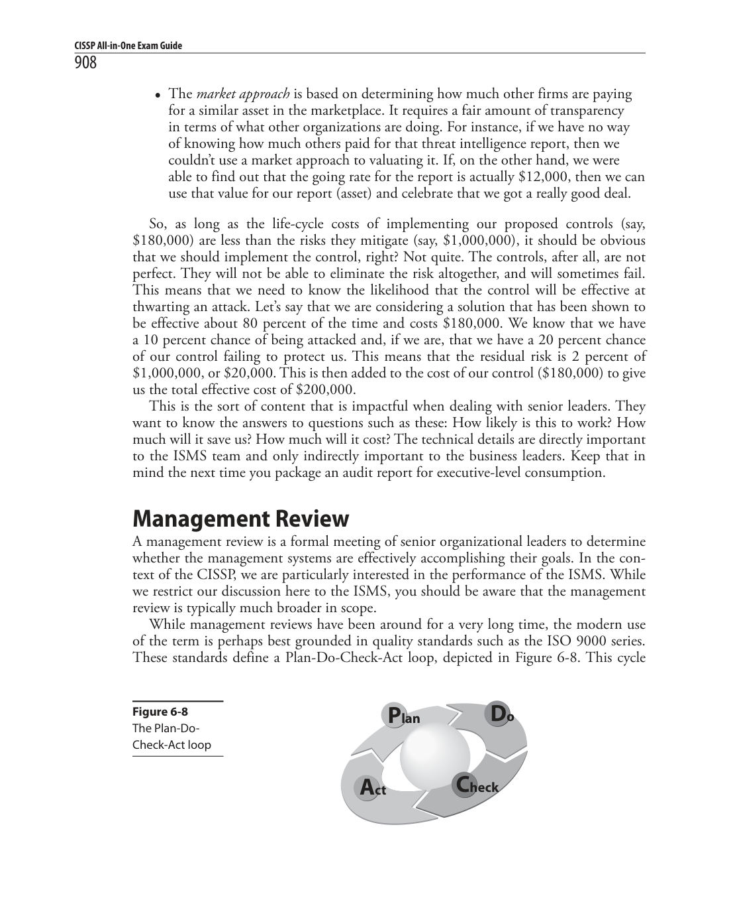
Figure 6-8
Do
Plan
Check
Act
of continuous improvement elegantly captures the essence of most topics we cover in this book. The Plan phase mostly maps to the material in Chapter 1. This phase is the foundation of everything else we do in an ISMS, because it determines our goals and drives our policies. The Do phase of the loop is covered in a variety of places, but is the focal point of Chapter 7. The Check phase is the main topic of most of this chapter. Lastly, the Act phase is what we formally do in the management review. We take all the information derived from the preceding stages and decide whether we need to adjust our goals, standards, or policies in order to continuously improve our posture. The management review, unsurprisingly, looks at the big picture in order to help set the strategy moving forward. For this reason, a well-run review will not be drawn into detailed discussions on very specific technical topics. Instead, it will take a holistic view of the organization and make strategic decisions, which is the primary reason why the management review must include all the key decision makers in the organization. This top-level involvement is what gives our ISMS legitimacy and power. When communicating with senior executives, it is important to speak the language of the business and to do so in a succinct manner. We already discussed this style of communication when we covered reports in the previous section, but it bears repeating here. If we are not able to clearly and quickly get the point across to senior leaders on the first try, we may not get another chance to do so.
Before the Management Review
The management review should happen periodically. The more immature the management system and/or the organization, the more frequent these reviews should take place. Obviously, the availability of the key leaders will be a limiting factor during scheduling. This periodicity helps ensure that the entire organization is able to develop an operational rhythm that feeds the senior-level decision-making process. Absent this regularity, the reviews risk becoming reactive rather than proactive. The frequency of the meetings should also be synchronized with the length of time required to implement the decisions of the preceding review. If, for instance, the leaders decided to implement sweeping changes that will take a year to develop, integrate, and measure, then having a review before the year is up may not be particularly effective. This is not to say that enough time must lapse to allow every single change to yield measurable results, but if these reviews are conducted too frequently, management won’t be able to make decisions that are informed by the results of the previous set of actions.
Reviewing Inputs
The inputs to the management review come from a variety of sources. A key input is the results of relevant audits, both external and internal. These are, in part, the reports described earlier in the chapter. In addition to making the audit reports available for review, it is also necessary to produce executive summaries that describe the key findings, the impact to the organization, and the recommended changes (if any). Remember to write these summaries in business language.
Another important input to the review is the list of open issues and action items from the previous management review. Ideally, all these issues have been addressed and all actions have been completed and verified. If that is not the case, it is important to highlight whatever issues (e.g., resources, regulations, changes in the landscape) prevented them from being closed. Senior leaders normally don’t like surprises (particularly unpleasant ones), so it might be wise to warn them of any unfinished business before the review is formally convened. In addition to the feedback from auditors and action officers, customer feedback is an important input to the management review. Virtually every organization has customers, and they are normally the reason for the organization to exist in the first place. Their satisfaction, or lack thereof, is crucial to the organization’s success. This chapter already mentioned real user monitoring (RUM) as one way of measuring their interactions with our information systems. Organizations are also increasingly relying on social media analysis to measure customer sentiments with regard to the organization in general and specific issues. Finally, we can use questionnaires or surveys, although these tend to have a number of challenges, including very low response rates and negative bias among respondents. The final inputs to the management review are the recommendations for improvement based on all the other inputs. This is really the crux of the review. (While it is technically possible for a review to include no substantive change recommendations, it would be extremely unusual since it would mean that the ISMS team cannot think of any way to improve the organizational posture.) The ISMS team will present proposed highlevel changes that require the approval and/or support of the senior leaders. This is not the place to discuss low-level tactical changes; we can take care of those ourselves. Instead, we would want to ask for changes to key policies or additional resources. These recommendations must logically follow from the other inputs that have been presented to the review panel. In setting the stage for the senior leaders’ decision-making process, it is often useful to present them with a range of options. Many security professionals typically offer three to five choices, depending on the complexity of the issues. For instance, one option could be “do nothing,” which describes what happens if no changes are made. At the other end of the spectrum, we could state an option that amounts to the solid-gold approach in which we pull out all the stops and make bold and perhaps costly changes that are all but guaranteed to take care of the problems. In between, we would offer one to three other choices with various levels of risk, resource requirements, and business appeal. When we present the options, we should also present objective evaluative criteria for management to consider. A criterion that is almost always required in the presentation is the monetary cost of the change. This factor should be the life-cycle cost of the option, not just the cost of implementation. It is a common mistake to overlook the maintenance costs over the life of the system/process, disregarding the fact that these costs are often much greater than the acquisition price tag. Other factors you may want to consider presenting are risk, impact on existing systems or processes, training requirements, and complexity. But whatever evaluative factors you choose, you should apply them to each of the options in order to assess which is the best one.
Management Actions
The senior leadership considers all the inputs; typically asks some pretty pointed questions; and then decides to approve, reject, or defer the recommendations. The amount of debate or discussion at this point is typically an indicator of how effective the ISMS team was at presenting sound arguments for changes that are well nested within (and supportive of ) the business processes. Obviously, the leadership’s decisions are the ultimate testament to how convincing the ISMS team’s arguments were. Typically, senior management will decide to either accept the recommendation in its entirety, accept it with specific changes, reject the recommendation, or send the ISMS team back to either get more supporting data or redesign the options. Regardless of the outcome, there will likely be a list of deliverables for the next management review that will have to be addressed. It is a good idea to conclude the management review with a review of open and action items, who will address them, and when they are each due. These all become inputs to the next management review in a cycle that continues indefinitely.
Summary
Evaluating our security posture is an iterative and continuous process. In this chapter, we discussed a variety of techniques that are helpful in determining how well we are mitigating risks with our technical and administrative controls. Whether you are doing your own audits or validating the audit plans provided by a third party, you should now know what to look for and how to evaluate proposals. Along the way, we also covered some specific threats and opportunities that should play a role in your assessment plan. It is important to keep in mind that everything we covered in this chapter is grounded in the risk management discussed in Chapter 1. If we do not keep in mind the specific threats and risks with which our organization is concerned, then it is very difficult to properly address them. Equally important is our ability to communicate our results and recommendations to our senior leaders in order to gain their support in implementing whatever changes are needed to continuously improve our security posture.
Quick Tips
An audit is a systematic assessment of the security controls of an information
- system.
Setting a clear set of goals is probably the most important step of planning a
- security audit.
Internal audits benefit from the auditors’ familiarity with the systems, but may be
- hindered by a lack of exposure to how others attack and defend systems.
External audits typically bring a much broader background of experience that can
- provide fresh insights, but can be expensive.
Service organizations are those that provide outsourcing services that can directly
- impact the control environment of a company’s customers.
An SAS 70 audit is carried out by a third party to assess the internal controls of a
- service organization.
Service Organization Controls (SOC) are auditing standards for service
- organizations.
SOC 1 pertains to financial controls.
- SOC 2 is a very detailed report that pertains to trust services (Security,
- Availability, Confidentiality, Process Integrity, and Privacy) and is intended for management and regulators.
SOC 3 also pertains to trust services (Security, Availability, Confidentiality,
- Process Integrity, and Privacy), but is a less detailed report that is intended for publication for the general public.
A vulnerability test is an examination of a system for the purpose of identifying,
- defining, and ranking its vulnerabilities.
Black box testing treats the system being tested as completely opaque.
- White box testing affords the auditor complete knowledge of the inner workings
- of the system even before the first scan is performed.
Gray box testing gives the auditor some, but not all, information about the
- internal workings of the system.
Penetration testing is the process of simulating attacks on a network and its
- systems at the request of the owner.
A blind test is one in which the assessors only have publicly available data to
- work with and the network security staff is aware that the testing will occur.
A double-blind test (stealth assessment) is a blind test in which the network
- security staff is not notified that testing will occur.
War dialing allows attackers and administrators to dial large blocks of phone
- numbers in search of available modems.
A log review is the examination of system log files to detect security events or to
- verify the effectiveness of security controls.
Synthetic transactions are scripted events that mimic the behaviors of real users
- and allow security professionals to systematically test the performance of critical services.
A misuse case is a use case that includes threat actors and the tasks they want to
- perform on the system.
A code review is a systematic examination of the instructions that comprise a
- piece of software, performed by someone other than the author of that code.
Interface testing is the systematic evaluation of a given set of exchange points for
- data between systems and/or users.
Administrative controls are implemented primarily through policies or
- procedures.
Privileged user accounts pose significant risk to the organization and should be
- carefully managed and controlled.
User accounts should be promptly suspended whenever the user departs the
- organization permanently or for an extended period.
Data backups should not be considered reliable unless they have been verified to
- be usable to restore data.
A business continuity plan (BCP) ensures that the critical business processes of an
- organization remain uninterrupted or are quickly restored after a serious event.
A disaster recovery plan (DRP) ensures that the information systems supporting
- critical business processes remain operational or are quickly restored in the event of a disaster.
The BCP and DRP both need to be evaluated regularly to ensure they remain
- effective in the face of environmental changes in and around the organization.
Security training is the process of teaching a skill or set of skills that will allow
- people to better perform specific functions.
Security awareness training is the process of exposing people to security issues so
- that they may be able to recognize them and better respond to them.
Social engineering, in the context of information security, is the process of
- manipulating individuals so that they perform actions that violate security protocols.
Phishing is social engineering conducted through a digital communication.
- A drive-by download is an automatic attack that is triggered simply by visiting a
- malicious website.
Key performance indicators (KPIs) measure the effectiveness of an organization
- in performing a given task at a given point in time.
Key risk indicators (KRIs) measure the risk inherent in performing a given action
- or set of actions.
Reports must be written with a specific audience in mind if they are to be
- effective.
A management review is a formal meeting in which senior organizational leaders
- determine whether the information security management systems are effectively accomplishing their goals.
Questions
Please remember that these questions are formatted and asked in a certain way for a reason. Keep in mind that the CISSP exam is asking questions at a conceptual level. Questions may not always have the perfect answer, and the candidate is advised against always looking for the perfect answer. Instead, the candidate should look for the best answer in the list.
1.Internal audits are the preferred approach when which of the following is true? A.The organization lacks the organic expertise to conduct them. B.Regulatory requirements dictate the use of a third-party auditor. C.The budget for security testing is limited or nonexistent. D.There is concern over the spillage of proprietary or confidential information. 2.All of the following are steps in the security audit processexceptwhich one? A.Document the results. B.Convene a management review. C.Involve the right business unit leaders. D.Determine the scope. 3.Which of the following is an advantage of using third-party auditors? A.They may have knowledge that an organization wouldn’t otherwise be able to leverage. B.Their cost. C.The requirement for NDAs and supervision. D.Their use of automated scanners and reports. 4.Choose the term that describes an audit report that covers the information security controls of a service organization and is intended for public release. A.SOC 1 B.SOC 2 C.SOC 3 D.Both B and C. 5.Which of the following is true of a vulnerability assessment? A.The aim is to identify as many vulnerabilities as possible. B.It is not concerned with the effects of the assessment on other systems. C.It is a predictive test aimed at assessing the future performance of a system. D.Ideally the assessment is fully automated with no human involvement.
6.An assessment whose goal is to assess the susceptibility of an organization to social engineering attacks is best classified as A.Physical testing B.Personnel testing C.Vulnerability testing D.Network testing 7.Which of the following is an assessment that affords the auditor detailed knowledge of the system’s architecture before conducting the test? A.White box testing B.Gray box testing C.Black box testing D.Zero knowledge testing 8.Vulnerability scans normally involve all of the followingexceptwhich one? A.The identification of active hosts on the network B.The identification of malware on all hosts C.The identification of misconfigured settings D.The identification of operating systems 9.Security event logs can best be protected from tampering by which one of the following? A.Encrypting the contents using asymmetric key encryption B.Ensuring every user has administrative rights on their own workstations C.Using remote logging over simplex communications media D.Storing the event logs on DVD-RW 10.Synthetic transactions are best described as A.Real user monitoring (RUM) B.Transactions that fall outside the normal purpose of a system C.Transactions that are synthesized from multiple users’ interactions with the system D.A way to test the behavior and performance of critical services
11.Suppose you want to study the actions an adversary may attempt against your system and test the effectiveness of the controls you have emplaced to mitigate the associated risks. Which of the following approaches would best allow you to accomplish this goal? A.Misuse case testing B.Use case testing C.Real user monitoring (RUM) D.Fuzzing 12.Code reviews include all the followingexceptwhich one? A.Ensuring the code conforms to applicable coding standards B.Discussing bugs, design issues, and anything else that comes up about the code C.Agreeing on a “disposition” for the code D.Fuzzing the code 13.Interface testing could involve which of the following? A.The application programming interface (API) B.The graphical user interface (GUI) C.Both of the above D.None of the above 14.One of the actions that attackers typically attempt after compromising a system is to acquire the ability to mimic a normal privileged user. What is one way in which they may accomplish this? A.Rebooting the compromised host B.Exporting the password hash table C.Pivoting from the compromised host to another target D.Adding a privileged user account 15.Which of the following is not normally an element of user accounts management audits? A.Password hashing B.Signed AUPs C.Privileged accounts D.Suspended accounts
16.How might one test adherence to the user accounts policy? A.User self-reporting B.Penetration testing C.Management review D.User records auditing 17.Which operating systems allows users to temporarily elevate their privileges in order to launch an application at a higher privilege level? A.All major desktop operating systems B.Recent versions of Windows C.Linux and Windows D.Recent versions of Mac OS X 18.All of the following are normally legitimate reasons to suspend rather than delete user accountsexceptwhich one? A.Regulatory compliance B.Protection of the user’s privacy C.Investigation of a subsequently discovered event D.Data retention policy 19.Data backup verification efforts should A.Have the smallest scope possible B.Be based on the threats to the organization C.Maximize impact on business D.Focus on user data 20.Why would an organization need to periodically test disaster recovery and business continuity plans if they’ve already been shown to work? A.Environmental changes may render them ineffective over time. B.It has low confidence in the abilities of the testers. C.To appease senior leadership. D.Resources may not be available in the future to test again. 21.All of the following are types of tests for disaster recovery and business continuity plansexceptwhich one? A.Structured walk-through test B.Simulation test C.Null hypothesis test D.Full-interruption test
22.What is the difference between security training and security awareness training? A.Security training is focused on skills, while security awareness training is focused on recognizing and responding to issues. B.Security training must be performed, while security awareness training is an aspirational goal. C.Security awareness training is focused on security personnel, while security training is geared toward all users. D.There is no difference. These terms refer to the same process. 23.Which of the following isnota form of social engineering? A.Pretexting B.Fishing C.Whaling D.Blackmailing 24.What is a key performance indicator (KPI)? A.Any attribute of the ISMS that can be described as a value B.The value of a factor at a particular point in time C.A derived value that is generated by comparing multiple measurements against each other or against a baseline D.An interpretation of one or more metrics that describes the effectiveness of the ISMS 25.Which of the following is true about key risk indicators (KRIs)? A.They tell managers where an organization stands with regard to its goals. B.They are inputs to the calculation of single loss expectancy (SLE). C.They tell managers where an organization stands with regard to its risk appetite. D.An interpretation of one or more metrics that describes the effectiveness of the ISMS. 26.Which of the following is true of management reviews? A.They happen periodically and include results of audits as a key input. B.They happen in an ad hoc manner as the needs of the organization dictate. C.They are normally conducted by mid-level managers, but their reports are presented to the key business leaders. D.They are focused on assessing the management of the information systems.
Answers
1.C.Third-party auditors are almost always fairly expensive, so if the organization’s budget does not support their use, it may be necessary to use internal assets to conduct the audit. 2.B.The management review is not a part of any audit. Instead, this review typically uses the results of one or more audits in order to make strategic decisions. 3.A.Because they perform audits in multiple other organizations, and since their knowledge is constantly refreshed, third-party auditors almost always have knowledge and insights that would otherwise be unavailable to the organization. 4.C.The SOC 2 and SOC 3 reports are similar in scope, but the SOC 3 report is more general and intended for wider distribution than the SOC 2, which is more detailed. 5.A.One of the principal goals of a vulnerability assessment is to identify as many security flaws as possible within a given system, while being careful not to disrupt other systems. 6.B.Social engineering is focused on people, so personnel testing is the best answer. 7.A.White box testing gives the tester detailed information about the internal workings of the system under study. Gray box testing providessomeinformation, so it is not the best answer to this question. 8.B.Vulnerability testing does not normally include scanning hosts for malware. Instead, it focuses on finding flaws that malware could potentially exploit. 9.C.Using a remote logging host raises the bar for attackers because if they are able to compromise one host, they would have to compromise the remote logger in order to tamper with the logs. The use of a simplex channel further hinders the attackers. 10.D.Synthetic transactions are those that simulate the behavior of real users, but are not the result of real user interactions with the system. They allow an organization to ensure that services are behaving properly without having to rely on user complaints to detect problems. 11.A.Misuse case testing allows us to document both an adversary’s desired actions on a system and the controls that are meant to thwart that adversary. It is similar to developing use cases, but with a malicious user’s actions in mind instead of those of legitimate users. 12.D.Fuzzing is a technique for detecting flaws in the code by bombarding it with massive amounts of random data. This is not part of a code review, which focuses on analyzing the source code, not its response to random data.
13.C.Interface testing covers the exchange points within different components of the system. The API is the exchange point between the system and the libraries it leverages, while the GUI is the exchange point between the system and the users. Testing either of these would constitute an interface test. 14.D.After compromising a host, attackers may attempt a number of actions, but will typically attempt to blend in by acquiring administrative privileges. They can do this by either compromising a privileged account, adding a privileged account, or elevating the privileges of the account they compromised. 15.A.Password hashing (covered in Chapter 5) is a very common approach to protecting user account passwords, but varies from one platform to the next. It is almost always controlled by the system itself and would normally not be part of the user accounts management audit. 16.D.A records audit can verify that users have acknowledged acceptance of the policy, that accounts of departed users have been suspended, that users have the appropriate access to information, and many other aspects of the policy. 17.A.All major operating systems allow for the temporary elevation of user privileges, but Mac OS X and some versions of Linux require the user to do so from a terminal window. 18.B.If the organization was intentionally attempting to protect the privacy of its users, suspension of the account would be a poor privacy measure compared to outright deletion. 19.B.The verification of data backups should focus on assessing the organization’s ability to respond to the threats identified during the threat modeling and risk management processes. If the organization can’t respond to these threats, then its backups may be useless. 20.A.The best reason to periodically test DRPs and BCPs is to assess the effects of internal or external environment changes on them. Changes to these plans are inevitable and often frequently required, which puts an organization at risk of unacceptably long system outages if it doesn’t periodically test its DRPs/BCPs. 21.C.The null hypothesis test is used in statistical analysis. Though it could conceivably be used to analyze the results of a DRP/BCP test, it would not be in and of itself a feasible way to test these plans. 22.A.Security training is the process of teaching a skill or set of skills that will allow people to better perform specific functions. Security awareness training, on the other hand, is the process of exposing people to security issues so that they may be able to recognize them and better respond to them. Security training is typically provided to security personnel, while security awareness training should be provided to every member of the organization. 23.B.The correct term for social engineering conducted over digital communications means is phishing, not fishing.
24.D.Key performance indicators (KPIs) are used by managers to assess the effectiveness of any critical business function. In the context of security, KPIs are based on metrics and are meant to answer the following question: Are we managing our information security well enough? 25.C.Key risk indicators (KRIs) allow managers to understand when specific activities of the organization are moving it toward a higher level of risk. They are useful to understanding changes and managing the overall risk. 26.A.Management reviews work best when they are regularly scheduled events involving the key organizational leaders, because this allows the subordinate leaders to plan and conduct the assessments, such as audits that provide inputs to the review.